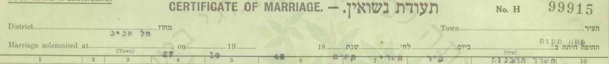
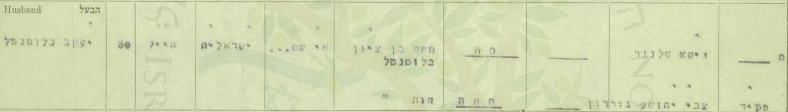
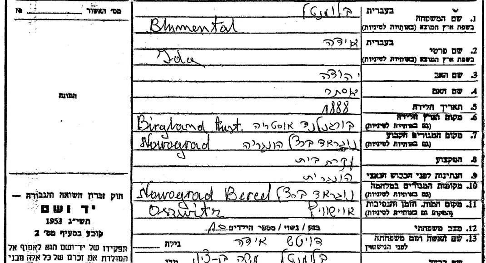
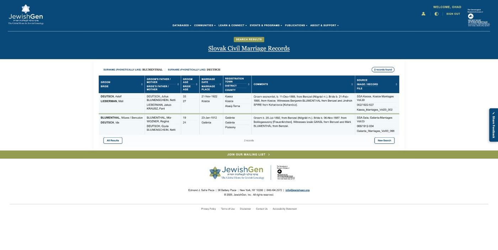
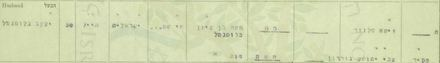
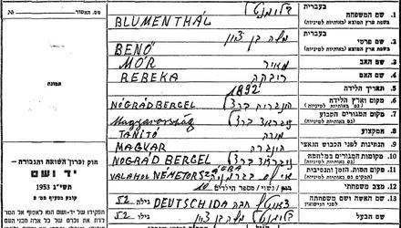
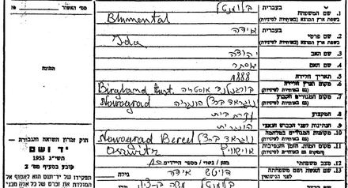
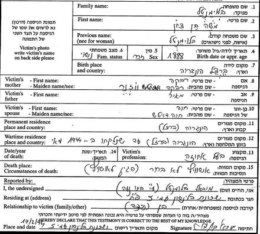

סולם הוודאות ומונחי המחקר — מה המילים האלה אומרות
תוכן העניינים — תשעה פרקים
יעקב בלומנטל נשא את מרים ליבוביץ ב-27 באוקטובר 1948 ברבנות פתח תקווה, בעיצומה של מלחמת העצמאות. בתעודת הנישואין הוא "חייל" בן 30, מקום מגוריו "אי שם...", ושמות הוריו — משה בן ציון וחוה בלומנטל — מסומנים "מת", "מתה".[1] בנם מאיר נולד בפתח תקווה ב-1952; כדורגלן של הפועל פתח תקווה וחייל בחיל האוויר, הוא צנח ומת באימון ב-21 בנובמבר 1974, בן 22, ו"השאיר אחריו הורים, שני אחים ואחות".[6][7] על שמו — "אחי-מאיר", אחיו של מאיר — נקראו אחיו אחימאיר; אם גם יעקב ומרים שינו את שמם — לא נמצא מסמך.[11]
מאין בא יעקב? לפי המשפחה — מהונגריה; וככל הנראה מנוגראדברצל (Nógrádbercel): הוריו הם, כנראה, משה בן ציון ("בנו") בלומנטל וחוה (אידה) לבית דויטש — בעלי אחוזה בנוגראדברצל, לפי העיתון הרשמי ההונגרי של 1926[14] — הורים לשנים-עשר, שנלקחו במאי 1944. דפי עד עליהם מילאו ארבעה מילדיהם, שחיו בפתח תקווה — ויעקב עצמו נרשם לנישואין ב-1948 מעין גנים, שכונתו של אחד מהם;[2][3][22] ועץ משפחה של קרוב, "מ. בלומנטל", רושם את יעקב כבנם.[13] מסמך שנוקב בשמו — אין, ובין שנים-עשר ילדיהם שבספר ארכיון מחוז נוגראד אין "Jakab" (4.8); הזיהוי — ככל הנראה, בגבול העליון (4.4).
כל מסמך שנקרא מופיע פעמיים — קישור אל הרשומה בארכיון וקישור אל עותק שמור; גם ממצא שלילי נרשם (9.4).
מאיפה להתחיל
- תעודת הנישואין, 1948 — המסמך שעליו נשען הכול.
- נוגראדברצל — משפחת בלומנטל — דפי העד, ומה הם מוכיחים ומה לא.
- מאיר, 1952–1974 — הבן שעל שמו נקראו אחיו.
- השם אחימאיר — מה ידוע ומה לא.
- הפעולות הפתוחות — מה עוד חסר, ואת מי לשאול.
1. תמצית
המסמך הראשון: תעודת נישואין מס' H 99915 של רבנות פתח תקווה, מחוז תל אביב, 27.10.1948 — כ"ד בתשרי תש"ט. החתן: "יעקב בלומנטל", 30, "חייל", העדה "ישראלית", מקום המגורים "אי שם...", אביו "משה בן ציון בלומנטל" — "מת", אמו "חוה" — "מתה". הכלה: "מרים ליבוביץ", 22, "פועלת", פתח תקווה, רחוב חובבי ציון 12, בת "משה הלוי ליבוביץ" ו"פרימט" — שניהם מתים. העדים: זישא שלנגר וצבי יהושע גורדון, פקיד.[1] — מאומת.
הילדים: כרטיס ההתאמה של MyHeritage לשמשון מונה את הוריו, "יעקב בלומנטל ומרים ליבוביץ'", ואת אחיו, "משה, נאוה ומאיר" — ככל הנראה מתוך רשומה ב-Geni.[8] מאיר — מאיר בלומנטל, "בן מרים ויעקב", נולד ב-11.4.1952 בפתח תקווה ומת בשירות צבא הקבע ב-21.11.1974; "השאיר אחריו הורים, שני אחים ואחות".[6] — הדף מאומת; שזהו בנם של יעקב ומרים שלנו — כמעט ודאי: שמות ההורים, העיר, שנת הלידה בין 1948 ל-1954, ומספר האחים — כולם מתיישבים (5.1). מכאן גם: יעקב ומרים היו בחיים בנובמבר 1974; ומודעת אבל מאותם ימים פונה ישירות ל"יעקב בלומנטל" (5.2). וב-28.9.1975 "העניק אביו של מאיר בלומנטל ז"ל" את הגביע על שם בנו, במגרש — כלומר, יעקב היה בחיים גם בספטמבר 1975 (5.1).[15]
המוצא: לפי המשפחה — הונגריה, בלי עיר.[11] משה בן ציון ("בנו") בלומנטל ואשתו חוה (אידה) לבית דויטש — "Blumenthal Benő és neje Deutsch Ida, nógrádberceli lakosok" ("בנו בלומנטל ואשתו אידה דויטש, תושבי נוגראדברצל") בעיתון הרשמי ההונגרי, 1926[14] — נספו, לפי רוב הדפים, ב-1944. עליהם תשעה דפי עד — מבניהם יצחק (1956), יהודה (1956) ומיכאל (1995, באמצעות בתו), מבתם רבקה גומבו, ומנכדתם חוה שרה דויטש-כהן;[2][3] בארבעה מהדפים — "10" ילדים. יצחק ובני משפחה נוספים — בפתח תקווה.[4] שיעקב הוא אחד מילדיהם — ככל הנראה, בגבול העליון (4.4): הזוג "משה בן ציון וחוה בלומנטל" נמצא במאגר השמות של יד ושם רק בנוגראדברצל (במגבלות החיפוש — 4.4); המשפחה מוסרת שיעקב בא מהונגריה; אחיו לכאורה חיו בפתח תקווה, שם נישא (וגם הכלה גרה שם) — וב-1948 גר יעקב בעין גנים, השכונה של אחד מהם, יצחק; אחיו לכאורה יהודה נרשם לנישואין ב-1952 כ"בן משה בן ציון", כמו יעקב בתעודתו;[22] הכלה — ממשפחה מבאלאשאג'רמאט, עיר המחוז (4.7); ועץ משפחה שמנהל קרוב מונה אותו כבנם — עץ שמקורותיו לא ידועים, ושייתכן שנבנה מאותה התאמת שמות לתעודת הנישואין.[13] מסמך שמונה את יעקב בין הילדים — אין; ובין שנים-עשר הילדים שמונה ספר ארכיון מחוז נוגראד אין "Jakab" (4.8).
מה לא נמצא: מתי עלה יעקב ארצה ובאיזו דרך; מה עשה עד 1948; מתי ואיפה נפטר — אחרי ספטמבר 1975. כל אלה — פרק 8.
2. מה ידוע מהמשפחה
נקודת המוצא היא עץ המשפחה ב-MyHeritage ("Achimeir Family Tree") — לא רשומה, אלא זיכרון משפחתי שנרשם.[8] בעץ עצמו אין לשמשון הורים; בכרטיס התאמה ("Record Match") מ-26.10.2026 מסכם האתר: "הורים: יעקב בלומנטל ומרים ליבוביץ'", "אחים/אחיות: משה, נאוה ומאיר" — ומתאים את שמשון לפרופיל ב-Geni בשם "שמשון אחי-מאיר", שבו גם "מאיר בלומנטל"; שאר הפרטים מוצפנים בתצוגה החינמית. מקור השמות, ככל הנראה — הרשומה ב-Geni.
ומפי המשפחה (אוהד צדוק, 26.10.2026):[11] "השם משפחה שלהם הוא בלומנטל, אחימאיר זה על שם האח מאיר שנפטר בגיל צעיר"; ובהודעה נוספת: "שני ההורים מהונגריה, אני לא בטוח מאיזו עיר, נוכל לשאול את שמשון מחר". — מאומת כעדות המשפחה; העיר — עוד לא נמסרה.
צאצאיו: שמשון אחימאיר (נ' 26.1.1954), נשוי מ-7.9.1981 לאילנה לבית קוטנר — בתם של אברהם וצפורה קוטנר (המחקר על אברהם, המחקר על צפורה). ילדיהם: טל (14.3.1987, שיקגו), נשואה מ-11.6.2017 לאוהד צדוק; איל (23.7.1989, שיקגו); ושירי (4.1.1998).[8] בנותיהם של טל ואוהד, יסמין ויערה — במחקרים על משפחת קוטנר. — מן העץ המשפחתי; טעון אימות מול רשומה.
ומעץ משפחה ב-MyHeritage שמנהל קרוב, "מ. בלומנטל מישראל" — עץ שכולל גם את "יוסף יונגר" ו"פסיה יונגר", "אבא של כלתה" ו"אמא של כלתה" של מרים, ולכן, ככל הנראה, נבנה בידי אחד מצאצאי יעקב ומרים — כפי שהגיע למשפחה כ"התאמה חכמה" (26.10.2026):[13] "מרים מגדה בלומנטל (לבית ליבוביץ)", ילידת 1925, הונגריה, נפטרה ב-2003; בעלה יעקב בלומנטל; ילדיה — מאיר ושלושה נוספים (פרטיים). חמיה — משה בן ציון בלומנטל; חמותה — חוה (לבית Deutsch); "סבתא של בעלה" — "Regina Rebekka Blumenthál" (אם האב), ו"סבא של בעלה" — "Juda Julius Deutsch" (אבי האם); וסבי-הסבים — "Izsak (יצחק) \"Ignacz\" Blumenthál" ו-"Hani / Johanna"; "מאיר הלוי סגל ווזנר (Wosner, Halevi)" ו"ציפורה פייגלא"; "Ignaz Naten Deutsch" ו-"Sara Rosalia Deutsch (לבית Brandt)". עץ משתמשים שמקורותיו לא ידועים — כיוון, לא רשומה; מתיישב עם דפי העד, אבל אינו עדות בלתי תלויה בהם.
3. תעודת הנישואין, 1948
3.1 התעודה


| שדה | קריאה | דירוג |
|---|---|---|
| מקום ותאריך | פתח תקווה, "משרד הרבנות"; 27.10.1948 — כ"ד תשרי תש"ט | מאומת |
| שם החתן | יעקב בלומנטל | מאומת |
| גיל | 30 — כלומר נולד ב-1917 או ב-1918 | מאומת כרישום |
| משלח יד | "חייל" | מאומת |
| מקום מגורים | "אי שם..." | מאומת |
| אביו | "משה בן ציון בלומנטל" — "מת" | מאומת |
| אמו | "חוה" — "מתה" | מאומת |
| העדים | זישא שלנגר; צבי יהושע גורדון, "פקיד" | מאומת |
3.2 מה התעודה אומרת על יעקב
שבאוקטובר 1948 היה חייל; שבמקום הכתובת נכתב "אי שם..." — בעוד שכתובת הכלה מפורטת; ושהוריו כבר אינם בחיים, כמו הוריה של הכלה. ההסבר ל"אי שם" — שירות צבאי שאין לנקוב במקומו — הוא פרשנות, לא ממצא; אבל ברשימת הנרשמים לנישואין ב"הצופה", 8.10.1948, כתובתו של יעקב — "עין גנים פ"ת", ו"אי שם" נכתב באותה רשימה בשורתו של חייל אחר (4.3).[22] מאיזו יחידה, ומתי גויס — לא ידוע; תיק השירות בארכיון צה"ל — פרק 8.
על הכלה, מרים ליבוביץ — המחקר עליה.
4. נוגראדברצל — משפחת בלומנטל
4.1 משה בן ציון ("בנו") בלומנטל
ארבעה דפי עד ביד ושם על משה בן ציון בלומנטל מנוגראדברצל (Nógrádbercel), כפר במחוז נוגראד שבהונגריה:[2]
| דף | ממלא | קרבה | תאריך | לידה | הוריו | מקצוע | במלחמה ומותו |
|---|---|---|---|---|---|---|---|
| 1349233 | יצחק בלומנטל, פתח תקווה, שיכון עממי כפר אברהם 14 | בן | 4.6.1956 | 1892, נוגראדברצל | מאיר (Mór) ורבקה (Rebeka) | "מורה" (Tanító) | "אי שם בגרמניה" (Valahol Németország) |
| 310307 | יהודה בלומנטל, פתח תקווה | בן | 17.12.1956 | 1892, נוגראדברצל | מאיר וחוה | "איכר" | "גיארמת (גטו)"; אושוויץ, 1944 |
| 1804444 | מיכאל בלומנטל, שיכון בילינסון, פתח תקווה — באמצעות בתו | בן ("נכדה" — הממלאת) | 17.2.1995 | 1888, ברצל | מאיר ורבקה לבית ווזנר | "בעל אחוזה" | "הונגריה (ברצל) עד שלקחו ב-1944 מאי"; "אושוויץ, לא חזר" |
| 3609155 | חוה שרה דויטש-כהן, נתניה — "סבי, אב אמי" | נכדה | אב תשנ"ג (1993) | בן 51 | מור ורגינה לבית ווזנר | (בשדה — "עקרת בית") | אושוויץ, 1944 |
הדפים חלוקים בשנת הלידה (1888 או 1892; "בן 51"), במקצוע (מורה, בעל אחוזה, איכר), בשם אמו (רבקה / רגינה / חוה) — ובמקום מותו: "אי שם בגרמניה" לפי יצחק (1956), אושוויץ לפי שלושת האחרים. הם מוצגים כאן כולם, בלי להכריע. מה שמשותף לכולם: משה בן ציון בלומנטל, נוגראדברצל, נשוי לחוה (אידה) לבית דויטש, נספה בשואה (1944 — בשלושה מן הדפים) — מאומת כעדות ילדיו ונכדתו. לפי שני דפים של יהודה, הוריו היו בזמן המלחמה ב"גיארמת (גטו)" — ככל הנראה באלאשאג'רמאט שבמחוז נוגראד.[2][3]
4.2 חוה (אידה) בלומנטל לבית דויטש
חמישה דפי עד, באשכול אחד ביד ושם:[3]
| דף | ממלא/ת | קרבה | לידה | הוריה | מותה |
|---|---|---|---|---|---|
| 1351282 | רבקה גומבו, פתח תקווה | בת | 1888, בורגנלנד, אוסטריה | יהודה ואסתר | אושוויץ |
| 1815364 | מיכאל בלומנטל, פתח תקווה (1995) | בן | 1885, פראואנקירכן, אוסטריה | יהודה דויטש ואסתר | "נלקחה ב-1944 למשרפות אושוויץ", מאי 1944 |
| 418389 | יהודה בלומנטל (1956) | בן | 1888, בורגנלנד, אוסטריה | יהודה ורגינה | "גיארמת (גטו)"; אושוויץ, 1944 |
| 421417 | יצחק בלומנטל (1956) | בן | 1890, Boldogasszony | יהודה (Gyula) ואסתר (Eszter) | אושוויץ |
| 3605706 | חוה שרה דויטש-כהן, נכדה | נכדה | בת 52; Boldogasszony (פראואנקירכן), בורגנלנד | גיולה ואנה | אושוויץ, 1944 |

שנת הלידה — 1885, 1888, 1890, או "בת 52" במותה; שם אמה — אסתר (שלושה דפים), רגינה, אנה; שם אביה — יהודה, או גיולה (Gyula). מקום הולדתה — פראואנקירכן (Boldogasszony) שבבורגנלנד. בארבעה דפים (של יצחק על אביו, של רבקה, של יצחק עליה ושל הנכדה) — עשרה ילדים. — מאומת כעדות ילדיה ונכדתה.
4.3 הילדים שמילאו את הדפים — ופתח תקווה
מבין עשרת הילדים שבדפי העד (שנים-עשר נולדו, לפי ספר ארכיון מחוז נוגראד — 4.8), ארבעה ידועים בשמם מתוך הדפים: יצחק, מיכאל, יהודה ורבקה (גומבו); וחמישית — אמה של הנכדה חוה שרה דויטש-כהן ("סבי — אב אמי"), שאינה בשמה. העץ של "מ. בלומנטל" מונה עוד את מאיר, ייטל (יהודית) לאה ופירושקה-פירי (פייגה הינדל), ולצדה יעקב כהן; ובין הגיסות — סימה לבית שרייבר: לפי פנקס 1961, אשת יצחק הייתה סימה — ככל הנראה היא.[13][4] אחרי המלחמה — בפתח תקווה:
- יצחק בלומנטל, יליד 1915, בן משה — בפנקס הבוחרים לכנסת, 1949, פתח תקווה, עין גנים 49;[4] ובפנקס 1961 — "כ[פר] אברהם, ש[יכון] עממי 14", אותה כתובת שבדף העד שמילא ב-1956, ולצדו סימה.[4] סימה — ילידת 1923 בפנקס 1961, אבל ב-1949, באותה כתובת בעין גנים 49, "סימה, בת אברהם, 1915" — אותה אישה, ככל הנראה, בשנות לידה שונות. ושנת 1915 של יצחק — בספר ארכיון מחוז נוגראד היא שנתו של יוז'ף, והספר מפנה את "יצחק" אל איגנץ (1919): מי מן הבנים הוא יצחק — טעון אימות (4.8).
- יהודה — חתם על דפיו "פ"ת", 1956.[2]
- רבקה גומבו — חתמה על דף העד של אמה "פ"ת"; התאריך — "24.7.5?", ככל הנראה 1957.[3]
- מיכאל — "שיכון בילינסון", פתח תקווה, 1995.[2] ואולי גם ב-1947: ב"לקרוב ולרחוק" — "בלומנטאל מיכאל" ברשימת עולי קפריסין שבמחנה עתלית (9.1.1947), ו"בלומנטאל איגנאץ־יאנו (מיכאל בלומנטאל) 4868" במדור לחיפוש קרובים בחיפה (6.2.1947): מיכאל בלומנטל מחפש את "איגנץ-ינו" בלומנטל — ושמות הקרובים "בסוגריים" הם שמות המבקשים.[22] איגנץ (1919) וינו (1922) — שניים מבני בנו ואידה בספר ארכיון נוגראד, והספר מזהה את מיכאל עם מיקלוש (4.8). שזה מיכאל שלהם, ושאת אחיו חיפש — אפשר ש… (טעון אימות): שמות בלבד, בלי הורים, גיל או מקום.
- יהודה — 1952: ב"הצופה", 21.8.1952, ברשימת הנרשמים לנישואין במשרד הרבנות פתח תקווה: "יהודה בלומנטל בן משה בן ציון, רוק, פ"ת" — ועטרה קרינדל בת שלמה שלזינגר.[22] שזה יהודה של דפי העד — כמעט ודאי: אותו כינוי כפול, "משה בן ציון", שבתעודת הנישואין של יעקב; אותו שם משפחה ואותה עיר.
- ויעקב עצמו — עין גנים, 1948: ב"הצופה", 8.10.1948, תחת "נרשמו לנשואין אצל הרבנות הראשית בפתח תקווה": "יעקב בן משה בלומנטאל — עין גנים פ"ת" ו"מרים בת משה ליבוביץ — פתח־תקווה" (בפענוח: "עין _גגים").[22] שיעקב גר אז בעין גנים — כמעט ודאי; שגר אצל יצחק — אפשר ש…: עין גנים — שכונה, ובה גרו ב-1949 עוד בני בלומנטל (להלן).
- בעותק השני של פנקס 1949, באותו עמוד — "בלומנטאל הינדה, [בת] יהודה, 1920, עין גנים 49", ו"בלומנטאל תמר, [בת] חיים, 1923, עין גנים 2".[4] בעץ של "מ. בלומנטל" — שתי גיסות בשם הינדה ("הינדא לבית ברגמן", "הינדה אהובה לבית בלונדר");[13] הינדה מעין גנים 49 — ככל הנראה אשת אחד האחים; טעון אימות.
- דף העד שמילאה הנכדה חוה שרה דויטש-כהן רושם את שם משפחתה הקודם — "כהן"; ובעץ של "מ. בלומנטל" — "פירושקה-פירי (פייגה הינדל) כהן (Kohn)" ובעלה "יעקב Kohn-כהן":[13] ייתכן שפירושקה היא אמה של הנכדה — טעון אימות.
4.4 האם יעקב הוא בנם? — הדירוג
| נימוק | בעד | נגד / חסר |
|---|---|---|
| שמות ההורים | "משה בן ציון" ו"חוה" — זהים לתעודת הנישואין. במאגר השמות של יד ושם (26.10.2026; "בלומנטל" + "בן ציון", Blumental / Blumentahl + Ben Zion, Blumenthal + Bencion) — חמש רשומות, ארבע מהן הוא; החמישית, "Mosze Ben Cwi" מנאגיוואראד, נשוי לאחרת | המאגר מכיל רק נספי שואה: זוג באותם שמות שמת במקום אחר או לפני המלחמה — לא היה מופיע בו; לא נבדקו הכתיבים Benő, Benzion, בלומנטאל |
| ארץ המוצא | לפי המשפחה, יעקב ומרים — "מהונגריה";[11] נוגראדברצל — בהונגריה | העיר לא נמסרה |
| שם אביה של חוה | דפי העד: "יהודה", "יהודה (Gyula)"; העץ של "מ. בלומנטל": "Juda Julius Deutsch"[13] | — |
| שני ההורים מתים ב-1948 | מתיישב: נספו ב-1944 | — |
| המקום | ארבעה ילדים בפתח תקווה; יעקב נישא בפתח תקווה ובנו נולד בה | חלש: הכלה גרה בפתח תקווה, והחתונה הייתה, מן הסתם, בעירה |
| המגורים, 1948 | ברישום לנישואין, 8.10.1948 — "עין גנים פ"ת": השכונה שבה גר ב-1949 יצחק, בן משה (עין גנים 49)[22] | עין גנים — שכונה, לא כתובת; ובה עוד בני בלומנטל |
| "משה בן ציון" בישראל | ברישום לנישואין של יהודה, 1952 — "יהודה בלומנטל בן משה בן ציון": אותו כינוי כפול שבתעודתו של יעקב[22] | מלמד על יהודה, לא על יעקב |
| משפחת הכלה | הוריה של מרים — כמעט ודאי מבאלאשאג'רמאט, עיר המחוז של נוגראדברצל; שני הזוגות — בגטו שלה ב-1944 (4.7) | קשר גאוגרפי; אינו מזהה |
| שמות הנכדים | מאיר — כשם אביו של משה בן ציון (Mór), כלומר כשם סבו של יעקב, אם הוא בנו; משה — כשם משה בן ציון (וגם כשם אביה של מרים) | ספקולציה: שמות נפוצים |
| מספר הילדים | "10" בדפי העד — שנים-עשר שנולדו, פחות שניים שמתו בינקותם (4.8) | הספר מונה את כולם בשמם, ואין ביניהם "Jakab"; ילד נוסף היה סותר את ה-"10" |
| עץ משפחה של קרוב | MyHeritage, "התאמה חכמה" מעץ "מ. בלומנטל מישראל": "מרים מגדה בלומנטל (לבית ליבוביץ)", 1925, הונגריה; בעלה יעקב בלומנטל; חמיה "משה בן ציון בלומנטל", חמותה "חוה (לבית Deutsch)"; גיסיה — מיכאל, יהודה, מאיר, רבקה גומבו, ייטל (יהודית) לאה, פירושקה (פייגה הינדל) כהן; ובין הגיסות — סימה לבית שרייבר[13] | עץ משתמשים, כנראה של צאצא של יעקב ומרים; מקורותיו לא ידועים — ייתכן שההורים צורפו בו לפי אותה התאמת שמות; אינו עדות בלתי תלויה |
| העיתונות ההונגרית | "Blumenthal Benő és neje Deutsch Ida, nógrádberceli lakosok" — 1926:[14] בני הזוג מדפי העד, באותו כפר, עשרים שנה קודם | אינה מזכירה ילדים |
| מסמך ארכיוני שמונה את יעקב בין הילדים | — | אין: אף דף עד אינו של יעקב או נוקב בו; לא נמצאה רשומת לידה; ובין שנים-עשר הילדים שבספר ארכיון מחוז נוגראד — אין "Jakab" (4.8) |
הדירוג: ככל הנראה — בגבול העליון. שמות ההורים זהים; האחים בפתח תקווה, ויעקב גר ב-1948 בשכונה של אחד מהם, עין גנים; יהודה נרשם ב-1952 כ"בן משה בן ציון", כמו יעקב בתעודתו; הכלה — ממשפחה מעיר המחוז, באלאשאג'רמאט; המשפחה מוסרת "הונגריה". עץ המשפחה של קרוב מונה את יעקב כבנם — אבל עץ משתמשים הוא כיוון, לא ראיה. אין מסמך שמונה את יעקב בין הילדים, בספר ארכיון מחוז נוגראד אין בן בשם "Jakab" (4.8), ועדות המשפחה אינה נוקבת בעיר — ולכן, לפי הסולם (9.2), לא יותר מ"ככל הנראה". כדי לעלות — מסמך: רשומת לידה בנוגראדברצל (1917/18), תיק עלייה, תיק שירות; או עדות ישירה של שמשון, משה או נאוה (פרק 8).
4.5 ברצל — בני בלומנטל נוספים
לפי רשימות מועמדי העלייה מהונגריה ב-1947 (הארכיון הציוני, S6/36831) ביקשו לעלות מברצל שישה בני בלומנטל: דוד (1907, איכר), סומה (1894, איכר), ינו (1914, טוחן), יוז'ף (1915, סוחר), מיקלוש (1920, איכר) ואיגנץ (1926) — אף אחד מהם אינו יעקב, ובאינדקס אין שמות הורים.[5] וב-JewishGen (26.10.2026, בחשבון מחובר) — 150 התאמות פונטיות ל"בלומנטל" + "ברצל"; אבל החיפוש הפונטי מערב שני כפרים: נוגראדברצל וטיסהברצל (Tiszabercel). רק מקצת השורות קשורות במפורש לנוגראד ("b. Berczel, Nograd"). ב-1868 נשא יעקב בלומנטל, "Groom resided in Berzel [Bercel?]" ("החתן גר בברזל [ברצל?]"), את לני וושנר (Wuszner) — שם קרוב לשם המשפחה של אמו של משה בן ציון ("ווזנר"); טעון אימות.[12] ועיתון בודפשטי פרסם ב-2.3.1947 את "רשימת שמותיהם של שלוש מאות יהודים מהונגריה שעוכבו בקפריסין" — ובה שישה בני בלומנטל "מברצל": שמואל, יצחק ("Jichak"), יוז'ף, גבריאלה, גיולה ומרדכי.[14] יעקב — אינו ברשימה. ועוד בני בלומנטל מברצל, ברשומות שאינן נוקבות בהורים:[18] כרטיס ג'וינט מווינה, 1956 — "BLUMENTHAL Mor", "Birth Date 20.5.03, Birth Place Bercel", פליט, "Country of destination USA" ("ארץ היעד: ארצות הברית") — יליד 1903, ולכן אינו בן של משה בן ציון; אבל שמו כשם אביו של משה בן ציון, מאיר (Mór) — אולי בן דוד (טעון אימות); "Blumenthal Ernő", יליד נוגראדברצל 1902, בן אמיליה וילהיים (Vilheim Emilia) — בתיק של התביעה העממית בבודפשט, 1946; "Deutsch Alajos", יליד נוגראדברצל 1855, בן רוזה בלומנטל — סוכן נדל"ן בבודפשט, 1902; ובמפתח MACSE לרישום האזרחי של ברצל — 56 לידות, 10 נישואין ו-7 פטירות בשם בלומנטל: המרשם שבו אמורות להיות רשומות לידות שנים-עשר הילדים — הרשומות עצמן פתוחות רק לחברי האגודה (פרק 8). כלומר: בברצל — כמה בני בלומנטל; השם לבדו אינו מזהה משפחה.
4.6 בנו בלומנטל בעיתונות ההונגרית, 1921–1931
בארכיון העיתונות ההונגרי (Arcanum) — בנו (Benő) בלומנטל מנוגראדברצל בשנות העשרים, כחקלאי ובעל אחוזה, ובצרותיו:[14]
- 1921: "Blumenthal Benő nagyberceli birtokos úr" ("מר בנו בלומנטל, בעל אחוזה בנאג'ברצל"), במכתב שפרסם שבועון החקלאים ב-1925: החיטה המושבחת "נזרעה אחרונה, הבשילה ראשונה", ונתנה "9 קווינטל לחולד הונגרי, לעומת 7 קווינטל בזן הישן".
- 1922: "Blumenthal Benő gazdasága, Nógrádbercel" ("משקו של בנו בלומנטל, נוגראדברצל") — מקטע חיפוש.
- 1925: ברשימת בעלי האחוזות והחוכרים של 100 חולד ומעלה — "Blumenthal Benő" — מקטע חיפוש.
- 1926: בעיתון הרשמי — שתי הוראות מכירה פומבית. הראשונה נגד "Blumenthal Benő és neje Deutsch Ida, nógrádberceli lakosok" ("בנו בלומנטל ואשתו אידה דויטש, תושבי נוגראדברצל"): על כרמים, על שתי "אחוזות אצולה" (nemesi birtok) ועל מגרש וגן; השנייה נגד "Blumenthal Benő" לבדו: על "בית, חצר וגן" בנוגראדברצל.
- 1930: "חוכר קרקעות נידון לשלושה חודשי מאסר": בנו בלומנטל חכר ב-1924 "למחצה", עם ינו הופמן, "אחוזה גדולה במחוז נוגראד"; הופמן הגיש נגדו תלונה פלילית ("bűnvádi feljelentést tett") על "18 מיליון כתר" שלא נתן עליהם דין וחשבון, ובית הדין בבאלאשאג'רמאט גזר עליו, בעבירת מעילה, שלושה חודשי מאסר — ערכאת הערעור אישרה.
- 1931: הוצאה לפועל של מוסד האשראי הקרקעי נגד "Blumenthal Benő berceli lakos", על "שדה ומרעה" הרשומים על שמו — מקטע חיפוש.
מה זה מוכיח: שבנו בלומנטל ואשתו אידה דויטש — בני הזוג מדפי העד — חיו בנוגראדברצל בשנות העשרים, כבעלי אחוזה וחוכרי קרקע — מאומת (העיתון הרשמי, 1926). הוא מתיישב עם "בעל אחוזה" שבדף העד של מיכאל ועם "איכר" שבדף של יהודה. שיעקב הוא בנם — לא נאמר כאן.
4.7 מאי–יוני 1944: הגטו בבאלאשאג'רמאט והגירוש
דפי העד שמילא יהודה בלומנטל רושמים את מקומם של ההורים בזמן המלחמה: "גיארמת (גטו)" — באלאשאג'רמאט, עיר המחוז (4.1).[2] על הגטו הזה מעידים שני פרוטוקולים שגבתה ב-1945–1946 הוועדה הלאומית לטיפול במגורשים (DEGOB) בבודפשט: של חבר המועצה היהודית בגטו, עורך דין יליד 1908 (פרוטוקול 3550), ושל שבע נשים מבאלאשאג'רמאט (פרוטוקול 3549).[16] לפיהם:
- 10 במאי 1944 — הגטו. ליהודי העיר — "két és fél utca" ("שני רחובות וחצי"), וליהודי הכפרים — "jóformán egy háztömb" ("כמעט גוש בתים אחד"); "Május 10-én hozták be a falusi zsidóságot" ("ב-10 במאי הביאו את יהודי הכפרים").
- סוף מאי — שירות העבודה. "az összes egészséges 16-48 éves férfiakat elvitték munkaszolgálatra" ("את כל הגברים הבריאים בני 16 עד 48 לקחו לשירות עבודה"); בגטו נשארו ילדים, נשים, חולים וגברים מעל 48. משה בן ציון — אז בן 51, ולפי דף עד אחד (1888) בן 55 — היה בין הנשארים.
- תחילת יוני — ניריֶשפוסטה (Nyírjespuszta). לפי עדות הנשים — ב-4 ביוני ("Június 4-én kivittek bennünket Nyírjespusztára" — "ב-4 ביוני הוציאו אותנו לניריֶשפוסטה"). בלילה, "30 percen belül" ("תוך 30 דקות"), עם חבילה של 50 ק"ג — אל "két nagy dohánypajtában" ("בשתי סככות טבק גדולות"): 2,000–2,500 איש, כ-1,850 מגיארמת וכ-700–800 מן הסביבה.
- 10 ביוני — הרכבת. "Egy transzporttal vittek el kb. 2800 embert, ebben benne voltak a balassagyarmatiak, a városi lakosság és a balassagyarmati járás zsidósága" ("ברכבת אחת לקחו כ-2,800 איש, ובהם אנשי באלאשאג'רמאט — תושבי העיר — ויהודי מחוז באלאשאג'רמאט"), כ-70 בקרון. בקאשה (קושיצה) קיבלו את הרכבת הגרמנים.
- 14 ביוני, עם שחר — בירקנאו. "Június 14-én hajnalban érkeztünk meg Auschwitz-Birkenauba" ("ב-14 ביוני עם שחר הגענו לאושוויץ-בירקנאו"). הגברים הבריאים בני 16–60 הופרדו לעבודה; "a többieket ... azóta senki sem látta" ("את האחרים ... איש לא ראה מאז").
מוזיאון אושוויץ-בירקנאו, לפי רשימתו של מיקולאש גאשקו, מונה שתי רכבות מבאלאשאג'רמאט שעברו בקאשה: ב-12.6.1944, ובה 2,810 איש, וב-14.6.1944, ובה 1,867. רשימות שמות — אין: מגורשי הונגריה לא נרשמו במחנה, וכשלושה רבעים מהם נשלחו מן הרמפה ישר אל תאי הגזים.[17] הרכבת שתיארו העדים — כ-2,800 איש, יצאה ב-10 ביוני והגיעה ב-14 ביוני — היא ככל הנראה הראשונה, של 2,810. את השנייה מסביר, כנראה, אותו עד: "Losonc másik részét Illéspusztáról vitték ..., ahonnan az ipolysági gettó lakóit is vagonírozták" ("את שאר יהודי לושונץ לקחו מאילֶשפוסטה ..., משם הועמסו גם יושבי גטו איפוישאג").
מה זה אומר על משה בן ציון וחוה: אם היו בגטו באלאשאג'רמאט, כדברי בנם יהודה — הם יצאו ככל הנראה ברכבת של 10 ביוני 1944, והגיעו לבירקנאו ב-14 ביוני. ככל הנראה — הכרונולוגיה של הגטו שלהם, לא רשומה שלהם. משה בן ציון, בן 51 (או 55), היה בתוך טווח הגילים שהופרד לעבודה ("16-60"); זה מתיישב עם גרסתו של יצחק מ-1956, שאביו מת "אי שם בגרמניה", ולא באושוויץ — אפשרות בלבד, טעון אימות. במאגר הנספים של מוזיאון אושוויץ יש שורה אחת, "Blumenthal Jenö", יליד 17.7.1892 — בלי מקום לידה, מגורים, מספר או מקור.[17] Jenö אינו Benő — אבל השמות נבדלים באות אחת, והתאריך רחוק שלושה ימים בלבד מתאריך לידתו של בנו ברישום האזרחי, 20.7.1892 (4.8): אולי שיבוש של אותו אדם — טעון אימות. מאיזה מסמך נלקחה השורה — שאלה למוזיאון (פרק 8).
ומשפחת הכלה: הוריה של מרים — כמעט ודאי משה ופרומה (פני) ליבוביץ מבאלאשאג'רמאט, סנדלר ואשתו — היו באותו גטו: בתם אסתר כתבה ב-1995 "גטו" — "NIRIEGE", ככל הנראה ניריֶש — ואושוויץ (המחקר על מרים). הורי החתן מכפר במחוז והורי הכלה מעיר המחוז — באותו גטו, ואולי באותה רכבת: אפשר ש….
ויעקב? אם היה בהונגריה ב-1940–1944, בן 22–26, היה חייב בשירות עבודה, כמו כל הגברים היהודים בגילו; ובגטו עצמו נלקחו לשירות כל הגברים הבריאים בני 16–48. רשומה של יעקב משנות המלחמה — לא נמצאה, באף מאגר (N-15). ייתכן גם שלא היה בהונגריה כלל: "יעקב בלומנטל" אחד היה ב-1941 בקבוצת הנוער של שריד (N-4), ואחר שב ארצה ב-1938 (N-14) — אף אחד מהם אינו מזוהה איתו.
4.8 הרישום האזרחי וספר ארכיון נוגראד: הנישואין, ושנים-עשר הילדים
הנישואין, 1912. במאגר הנישואין האזרחיים של סלובקיה ב-JewishGen (ספר הנישואין של גלנטה, בארכיון הממלכתי בשאליה):[20] "BLUMENTHAL, Mózes / Benczion" — בן "BLUMENTHAL, Mór" ו"WOZNER, Regina", בן 19 — נשא את "DEUTSCH, Ida" — בת "DEUTSCH, Gyula" ו"BLUMENSCHEIN, Netti", בת 24 — ב-"23-Jan-1912" בגלנטה (Galánta): "Groom b. 20-Jul-1892, from Berczel (Nógrád m.). Bride b. 06-Nov-1887, from Boldogasszony [Frauenkirchen]" ("החתן נולד ב-20.7.1892, מברצל שבמחוז נוגראד; הכלה נולדה ב-6.11.1887, מבולדוגאסוני [פראואנקירכן]"); העדים — איזאק גנזל ומארק בלומנטל, שניהם מברצל.

אלה משה בן ציון ("Mózes / Benczion") וחוה (אידה), בשמם ובשמות הוריהם — כמו בדפי העד (4.1, 4.2). באותם מאגרים: לידתה של אידה, 6.11.1887, בבולדוגאסוני, לגיולה (Julius) ולנטי לבית בלומנשיין; שני ילדים שמתו בינקותם בברצל — "BLUMENTHAL, Szerén", 12.5.1918, ו"BLUMENTHAL, Dezsö", 14.7.1928, "Benö // DEUTSCH Ida"; ומות הוריו של בנו בברצל ב-1920 — מור (6.6.1920, בן 67, בן יוז'ף ויוהנה לבית קליין) ורגינה לבית ווזנר (30.9.1920, בת מאיר ופאני לבית פליישמן). ככל הנראה — שורות אינדקס, שכל שדותיהן מתיישבים; הפנקסים עצמם לא נראו.
שנים-עשר ילדים. ספר המחקר של ארכיון מחוז נוגראד, Senkiföldjén (2006) — שנבנה על פנקסי הקהילה והרישום האזרחי, רישומי בית הספר ושאלוני 1945 — מונה את ילדי "Benő (Moshe Bentzion)" ואידה:[21]
| # | שם | שנה | לפי הספר |
|---|---|---|---|
| 1 | גבריאלה | 1912 | הבכורה; נישאה ב-1941 לינו קאופר; חזרה ב-1945 |
| 2 | יוז'ף | 1915 | חנות מכולת בברצל ובפלוטש; אשתו ובנם מתו; חזר מפולין בינואר 1945 |
| 3 | פירושקה | 1916 | שרדה; חזרה ב-1945; תופרת |
| 4 | סרנה | 1918 | מתה באותה שנה |
| 5 | איגנץ | 1919 | "További sorsát nem ismerjük ... (A háború után valószínűleg Izraelben telepedett le.)" ("גורלו לא ידוע ... [אחרי המלחמה, כנראה התיישב בישראל]") |
| 6 | מור | 1921 | לא חזר מן הגירוש |
| 7 | ינו (Jenő) | 1922 | שרד; חצה את הגבול ב-23.5.1945; סוחר |
| 8 | מרתה | 1923 | חזרה ב-1945; תופרת |
| 9 | גיולה | 1925 | חזר מן הגירוש |
| 10–11 | אילונה ומיקלוש, תאומים | 1926 | אילונה לא שרדה; מיקלוש חזר ב-1945 |
| 12 | דז'ה | 1928 | מת באותה שנה |
שנים-עשר נולדו, ועשרה היו בחיים ב-1944 — כמו "10" שבדפי העד. ובנו — "nem kevesebb, mint nyolc családtagjával együtt hurcolták el" ("גורש יחד עם לא פחות משמונה מבני משפחתו"). הספר מזהה את "מיכאל" שבדף העד (בספר: 1994; הדף עצמו — 17.2.1995) עם מיקלוש, ומפנה את "יצחק", שמילא דף ב-1956, אל איגנץ — הפניה בלבד, "vö. III. 1. 3. 5." ("השווה"), בלי נימוק. גיולה (1925) — אולי יהודה: Gyula ויהודה הם צמד שמות מקובל, וכך נרשם אבי אידה, "יהודה (Gyula)", בדף 421417 (4.2); אבל דפי העד של יהודה עצמו (310307, 418389) אינם נוקבים ב-Gyula — טעון אימות. ומור — כנראה מאיר, שבעץ המשפחה. הספר מקור משני, של ארכיונאים, ועל כן — ככל הנראה.
יצחק — איגנץ, או יוז'ף? בפנקסי הבוחרים, 1949 ו-1961, יצחק בלומנטל, בן משה, הוא יליד 1915 (4.3)[4] — שנתו של יוז'ף בספר, לא של איגנץ. ושנות הלידה של הבנים סותרות גם במקורות אחרים: באינדקס מועמדי העלייה מ-1947 — "איגנץ" מברצל, יליד 1926, ו"מיקלוש", יליד 1920 (4.5);[5] בשתי רשימות ניצולים ב-JewishGen — "BLUMENTHAL, Miklós", ברצל, 1920 (באחת מהן — 27.11.1920);[12] ואילו בספר — איגנץ 1919, ומיקלוש 1926, אחיה התאום של אילונה. בברצל היו כמה משפחות בלומנטל (4.5), ולכן גם שורה בשם הנכון אינה בהכרח של בן של בנו ואידה. "יצחק = איגנץ" — טעון אימות; וכך גם שנת הלידה של איגנץ.
ויעקב? אין "Jakab" ברשימה. בתעודת הנישואין, 27.10.1948, הוא בן 30 — יליד 1918 בערך. האפשרויות: - איגנץ — לפי הספר יליד 1919, הבן היחיד שגורלו לא ידוע, "כנראה בישראל"; בן 29 באוקטובר 1948 — ההתאמה הטובה ביותר בגיל. ובפברואר 1947 חיפש "מיכאל בלומנטל" — אולי אחיו מיקלוש — את "איגנאץ־יאנו בלומנטל" דרך המדור לחיפוש קרובים בחיפה (4.3); אפשר ש… (טעון אימות). אבל הספר מפנה אליו את "יצחק"; ואם הוא "Ignác, 1926" שבאינדקס העלייה — היה בן 22, ואינו יעקב. בעצורי קפריסין 1947 (4.5) רשומים גם יוז'ף וגם "Jichak" (יצחק) מברצל — אבל הרשימה כוללת את כל בני בלומנטל מברצל, מכל המשפחות, ולכן אינה מכריעה. אם יצחק הוא יוז'ף — איגנץ פנוי. - ינו, 1922 — שרד, ושמו האזרחי מתחיל, כמו יעקב, ב-J; אבל ב-1948 היה בן 26, לא 30. - יוז'ף, 1915 — בן 33 ב-1948; שנתו כשנת יצחק בפנקסים — ואולי הוא יצחק. - ילד שלא נרשם — אפשרות חלשה: הספר מונה את סרנה (1918) כ"ילדתם הרביעית" ("negyedik gyermeke"), אחרי גבריאלה, יוז'ף ופירושקה; ו-"10" שבדפי העד שווה בדיוק לשנים-עשר פחות שניים שמתו בינקותם. הערת הספר על חסרים בפנקסים ("az anyakönyvek hiányai miatt" — "בגלל החסרים בפנקסים") נוגעת לילדי מור ורגינה, הדור הקודם — לא לילדי בנו ואידה. - שיעקב אינו בנם — אבל שמות הוריו בתעודה, משה בן ציון וחוה בלומנטל, הם שמם המלא של בנו ואידה, ו"Moshe Bentzion" — גם בספר.
הדירוג נשאר "ככל הנראה" — בגבול העליון, וחלש יותר: הורים בשמם המלא, בלי בן בשם יעקב ברשימה; ומי מן הבנים הוא יצחק — לא הוכרע. אם יתברר שיצחק הוא איגנץ, ושמו העברי של ינו אינו יעקב — לא יישאר בן שגילו מתאים, והדירוג ירד ל"אפשר ש…". מה שיכריע: שמו ההונגרי של יעקב ותאריך לידתו — שמשון; תעודת הזהות; פנקס הלידות של ברצל (פרק 8).
5. פתח תקווה — המשפחה
5.1 מאיר בלומנטל, 1952–1974

לפי דף ההנצחה באתר יזכור:[6] מאיר בלומנטל, חיל האוויר, "בן יעקב ומרים", נולד ב-ט"ז בניסן תשי"ב (11.4.1952) בפתח תקווה; למד בבית הספר היסודי "השומר" בבני ברק, בבית הספר המקצועי "מקס פיין" בתל אביב וב"עמל" בפתח תקווה; שיחק בקבוצת הנערים של הפועל פתח תקווה, בנבחרת גוש דן — ונבחר לקפטן בנסיעתה לחוץ לארץ — ובקבוצת הנוער בליגה הלאומית. גויס בנובמבר 1970 לחיל האוויר, נהג רכב כבד, ונשאר בצבא הקבע בדרגת סמל; השתתף במלחמת יום הכיפורים בסיני וברמת הגולן. נפטר בשירותו ב-ז' בכסלו תשל"ה, 21.11.1974, ונקבר בבית העלמין הצבאי בקריית שאול (גוש 1, חלקה 9, שורה 5, קבר 19); "השאיר אחריו הורים, שני אחים ואחות"; "אחרי מותו הועלה לדרגת סמ"ר" — סמל ראשון. אחותו כתבה: "הספורט היווה את כל חייו... הוא התחיל את חייו במגרש הספורט, עסק בו רוב חייו ואף סיים בו את חייו".
"מעריב" למחרת:[7] "כדורגלן הפועל פתח תקוה ונבחרת הנוער בעבר, מאיר בלומנטל, צנח אתמול על פני הדשא בעת אימון קבוצתו — ומת. היה בן 22 וחצי. השאיר הורים, שני אחים ואחות... הועבר לבית החולים 'בילינסון' — שם נקבע מותו"; "בלומי — כפי שכונה — היה בחור צנוע וביישן"; ו"דבר": "לקה בהתקף לב". לפי "מעריב", שיחק בנבחרת הנוער כשזכתה בגביע אסיה בבנגקוק.
מאיר בעיתונות הספורט, 1971–1980
בעיתונות העברית (JPress) — עוד כשלושים ידיעות על מאיר, מימי הנוער ועד הגביע על שמו:[15]
- 1971: "הצעירים ששולבו בשורותיהם, כמו מאיר בלומנטל ובוז'יקובסקי, הפגינו ניצוצות של כשרון" — האזכור המוקדם ביותר בקבוצה הבוגרת ("מעריב", 5.10.1971).
- 1972 — גביע אסיה לנוער, בנגקוק: בטקס הפתיחה — "את הדגל נשא מאיר בלומנטל" ("מעריב", 16.4.1972); ובגמר, שבו ניצחה ישראל את דרום קוריאה 0:1, אמר המאמן: "הכנסתי למשחק את בלומנטל והוא שיחק כאילו השתתף בכל משחקי הטורניר" ("דבר", 7.5.1972).
- 1972–1974 — בצבא ובליגה: בקבוצת פיקוד המרכז בגביע הרמטכ"ל, ואף כבש בו שער; בהפועל פתח תקווה — מגן, ופנדלים: בגביע המדינה (ינואר 1973) וב"דרבי" שנגמר 0:5 (דצמבר 1973); ובאפריל 1974 — נעדר מהאימון "(בשירות)".
- 22.11.1974: "על המשמר": "בן ה-22, חייל בצבא קבע, הגיע לאימון והחל ריצה יחד עם חבריו... צנח לפתע, ובטרם חשו אליו נפטר. נראה כי לקה בשבץ-לב". "דבר", 24.11.1974: "קהל אלפים ליווה ביום ששי את הכדורגלן מאיר בלומנטל למנוחת עולמים. מסע ההלוויה יצא מפ"ת לבית העלמין בקרית שאול"; הספיד מזכיר הפועל פתח תקווה, אורי קרני. ושר החינוך, אהרן ידלין, שלח למשפחה מברק תנחומים.
- 26.11.1974: "ביקרה משלחת של שחקני הפועל פ"ת אצל משפחתו של מאיר בלומנטל ז"ל".
- הגביע על שמו: בדצמבר 1974 — משחק הפועל פתח תקווה נגד אוגסבורג "על גביע לזכרו של שחקן הפועל פ"ת מאיר בלומנטל ז"ל"; ב-28.9.1975 — "בתום המשחק העניק אביו של מאיר בלומנטל ז"ל ל'קפטן' מכבי תל-אביב, צבי רוזן, גביע"; ב-1976 — גביע הילדים "לזכרו של מאיר בלומנטל"; וב-23.3.1980 — "העניקו בני משפחתו של מאיר בלומנטל ז"ל את הגביע הענק".
את הידיעות האלה מזהים שמו המלא, הקבוצה, נבחרת הנוער ונסיבות מותו — מאומת (כטקסט; תמונות העמודים חסומות). "אביו של מאיר" ב-1975 אינו נקרא בשמו — אבל, לפי דף ההנצחה, אביו של מאיר הוא יעקב.
הזיהוי: שמות ההורים (יעקב ומרים), העיר (פתח תקווה), שנת הלידה (1952 — בין הנישואין ב-1948 ללידת שמשון ב-1954), ומספר האחים (שני אחים ואחות — שמשון, משה ונאוה) — כולם מתיישבים עם כרטיס ההתאמה ועם עדות המשפחה. — כמעט ודאי. המצבה עצמה לא נראתה.
5.2 מודעות האבל, 1974–1977
ב"מעריב", 24.11.1974, בטור מודעות התנחומים — שלוש מודעות על מאיר:[7]
- "יעקב בלומנטל ... היקרים, אתכם באסונכם הכבד בהלקח מכם ... יקירכם, מאיר" — בחתימת "משפחות בייזר-גרובר". מודעה הפונה אל יעקב בשמו: באותם ימים — בלומנטל, ובחיים.
- "למשפחת בלומנטל ... במות עליכם בנכם היקר, האהוב על כולנו, מאיר בלומנטל ז"ל — דיירי הבית, רחוב יהוד 2, פתח תקוה".
- "לסג"מ בלומנטל ... אחיך ... משתתפים בצערך — מפקד החיל ופקודיו". השם הפרטי של סגן-המשנה, בפענוח המכונה של העיתון — "שומעון": אולי שמשון, אולי שמעון. תמונת העמוד חסומה (Cloudflare) — טעון אימות.
ושלוש מודעות אזכרה, חתומות "המשפחה":[7]
- 7.11.1975: "במלאת שנה לפטירתו של בננו ואחינו היקר מאיר בלומנטל ז"ל ... אזכרה ... בחלקה הצבאית בבית העלמין בקרית שאול. אוטובוס יצא מביתנו ברח' רוטשילד 160א', פתח תקוה".
- 26.11.1976 ו-15.11.1977: אזכרות ל"מאיר בלומנטל ז"ל", בקריית שאול.
5.3 שמשון
שמשון, נ' 26.1.1954 — מן העץ המשפחתי.[8] אם "סג"מ בלומנטל" מנובמבר 1974 הוא שמשון, היה אז קצין בן 20; חילו — "מפקד החיל" — אינו נקוב. — טעון אימות.
6. השם אחימאיר
אחי-מאיר — "אחיו של מאיר". לפי המשפחה: "השם משפחה שלהם הוא בלומנטל, אחימאיר זה על שם האח מאיר".[11] כלומר — השם הוא של האחים; שמשון רשום בעץ המשפחתי בשם אחימאיר, ובפרופיל ב-Geni — "שמשון אחי-מאיר".[8] אם גם יעקב ומרים שינו את שמם — לא נמצא מסמך: מודעות האזכרה 1975–1977 חתומות "המשפחה", ושמו של מאיר בהן הוא, מטבע הדברים, שמו בחייו — כך שהן אינן מלמדות דבר על מועד השינוי. מתי הוחלף השם — לא ידוע. ההודעה ב"ילקוט הפרסומים" — לא נמצאה (N-6).
שם זהה נשאו עשרות שנים קודם לכן אבא אחימאיר (גייסינוביץ') ומשפחתו, ובהם בנו, העיתונאי יעקב אחימאיר, יליד 1938; הם אינם המשפחה הזאת (N-5).
7. עץ המשפחה
שלושה דורות לפני שמשון, כפי שהם עולים מהמסמכים. קו ההורות בין משה בן ציון וחוה ליעקב — ככל הנראה; ארבעת הילדים בשמם — מדפי העד; הנכדים — מכרטיס ההתאמה ומאתר יזכור. ראו את העץ.
8. פעולות פתוחות
| # | פעולה | למה | איפה |
|---|---|---|---|
| 1 | לשאול את שמשון, משה ונאוה: האם אביהם בא מנוגראדברצל, והאם יצחק, מיכאל, יהודה ורבקה גומבו הם אחיו? מתי עלה? מתי נפטרו יעקב ומרים — אחרי ספטמבר 1975 — ואיפה נקברו? מי שינה את השם, ומתי? | ההכרעה בזיהוי (4.4); תאריכי הפטירה; השם | המשפחה |
| 2 | תיק השירות של יעקב בלומנטל בצה"ל, 1948 | יחידה, תאריך גיוס, ארץ לידה | ארכיון צה"ל ומערכת הביטחון |
| 3 | תיק עולה / תעודת זהות של יעקב בלומנטל | תאריך ומקום לידה, תאריך עלייה | ארכיון המדינה (משרד הפנים) |
| 4 | פנקס הלידות של ברצל, 1915–1922 (Hungary Civil Registration, מחוז סיראק) | האם נולד לבנו ואידה בן בשם יעקב (Jakab), ומתי; ומי מבניהם הוא יעקב — איגנץ (1919)? ינו (1922)? (4.8) | FamilySearch — דורש חשבון; MACSE (חשבון חינמי) — במפתח 56 לידות בלומנטל בברצל |
| 4א | שאלוני החוזרים והרכוש הנטוש של ברצל, 1945–1946 (ארכיון נוגראד, NML V. 202. 2) | מי מן הילדים חזר, ואיפה היה כל אחד — ואולי יעקב | ארכיון מחוז נוגראד |
| 5 | פטירה וקבורה תחת בלומנטל, אחרי 1974 | הפטירה — לא נמצאה בשום שם | בתי העלמין בפתח תקווה (סגולה, ירקון); BillionGraves |
| 6a | מנהל העץ "מ. בלומנטל" ב-MyHeritage | מאין לקח את הורי יעקב — זיכרון משפחתי או התאמת שמות | פנייה דרך MyHeritage, או דרך המשפחה |
| 6 | משפחות בייזר-גרובר (המודעה מ-1974), ו"Yacob Grouber" (6642) הרשום בנוטרים ב-1944 לצד "Yacov Blumenthal" (6694) | קרובים? חברים? — ואולי קשר בין יעקב שלנו לנוטר 6694 | ארכיון ההגנה; המשפחה |
| 7 | המצבה בקריית שאול (גוש 1, חלקה 9, שורה 5, קבר 19) | השם על המצבה ושמות ההורים | צילום במקום / BillionGraves |
| 8 | צאצאי יצחק, מיכאל, יהודה ורבקה גומבו | בני דודים של שמשון — האם יעקב מוכר להם כאח | המשפחה |
| 9 | "בלומנטל יעקב" בקבוצת הנוער של שריד, 1941 | האם הוא יעקב שלנו (N-4) | יד יערי (הקיבוץ הארצי) |
| 10 | עמוד "מעריב" 24.11.1974, עמ' 10 | השם "שומעון" — שמשון? | הספרייה הלאומית — בדפדפן |
| 11 | שירות העבודה (munkaszolgálat), 1940–1944 | האם יעקב היה בהונגריה בשנות המלחמה, ובאיזו פלוגה (4.7) | ארכיון ההיסטוריה הצבאית בבודפשט (HL); יד ושם; לשאול את שמשון |
| 12 | מוזיאון אושוויץ — מקור הרשומה 34610, "Blumenthal Jenö", 17.7.1892 | האם זה משה בן ציון — 17.7 מול 20.7.1892, ו-Jenö מול Benő: אולי שיבוש — ומאיזה מסמך (4.7) | ארכיון המוזיאון, בדוא"ל |
| 13 | ארכיון מחוז נוגראד: סניף באלאשאג'רמאט (מפתח EHRI hu-006079), ותיקי נציב הרכוש הנטוש בבאלאשאג'רמאט, 1945–1948 (hu-002761) | תיק בית המשפט מ-1930; תיק הרכוש של בנו בלומנטל — ומי מבני המשפחה תבע אותו אחרי המלחמה[18] | בקשה בכתב לארכיון |
| 14 | תיק העולה של יצחק בלומנטל (1915, פתח תקווה) | מי מן הבנים שבספר הוא — יוז'ף (1915) או איגנץ — ומכאן, אם איגנץ "פנוי" להיות יעקב (4.8) | ארכיון המדינה; צאצאיו |
| 15 | תיק הרבנות בפתח תקווה — הרישום לנישואין של יעקב ומרים, אוקטובר 1948 | ארץ ותאריך לידה, ואולי שמות ההורים בצורתם ההונגרית | ארכיון המדינה; הרבנות פתח תקווה |
| 16 | תיק 4868 של המדור לחיפוש קרובים בחיפה, 1947 — "בלומנטאל איגנאץ־יאנו", שחיפש "מיכאל בלומנטל" | מי חיפש את מי, ומאיפה — ואולי יעקב הוא איגנץ (4.3, 4.8) | הארכיון הציוני המרכזי (תיקי מחלקת העלייה) |
9. שיטה ומגבלות
9.1 בסיס הראיות
מסמך ראשוני אחד על יעקב עצמו — תעודת הנישואין;[1] הרישום לנישואין ב"הצופה", 1948;[22] ומודעת אבל אחת, מ-1974, הפונה אליו בשמו.[7] על הוריו ומשפחתם — תשעה דפי עד, עדויות מאוחרות של ילדיהם ונכדתם;[2][3] שורות אינדקס מן הרישום האזרחי, וספר ארכיון מחוז נוגראד;[20][21] על הבן מאיר — דף ההנצחה הממלכתי ועיתונות בת-זמנה.[6][7] לא נמצאו: רשומת עלייה, תעודת לידה, תיק צבאי, רשומת פטירה או קבורה של יעקב.
9.2 סולם הוודאות
מאומת — המסמך אומר זאת במפורש; כמעט ודאי — כמה מסמכים מתיישבים ואין סתירה; ככל הנראה — ההתאמה טובה אבל חסר מסמך מקשר; טעון אימות — רמז בלבד; נשלל — נבדק ואינו הוא. מסמך מדורג לחוד, וזיהוי האדם שבו — לחוד.
9.3 מוסכמות הכתיב
בלומנטל · Blumenthal · Blumental · Blumentahl · Bliumental · בלומנטאל. אחימאיר · אחי-מאיר · Achimeir · Ahimeir. נוגראדברצל · Nógrádbercel · Nograd Bercel · ברצל. משה בן ציון · Benő · Mosh Ben Zion. חוה · אידה · Ida · Chawa. ווזנר · Wozner · Vozner. גיארמת · Balassagyarmat · Gyarmat. עין גנים · Ein Ganim. איגנץ · Ignác · איגנאץ; ינו · Jenő · יאנו; מיקלוש · Miklós.
9.4 ממצאים שליליים
| # | שאלה | מקור וכיסוי | תוצאה | דירוג |
|---|---|---|---|---|
| N-1 | דף עד שמילא יעקב על הוריו | יד ושם, ממלא Blumenthal / Blumental / בלומנטל + Yaakov / Yakov / Jakob / יעקב, וממלא אחימאיר / Achimeir / Ahimeir — 26.10.2026 | אין; תשעת הדפים על משה בן ציון וחוה — מיצחק, מיכאל, יהודה, רבקה ונכדה | ככל הנראה — לא מילא |
| N-2 | יעקב בלומנטל בעלייה מהונגריה | IGRA, Blumenthal + Hungary — 38 שורות, כולן נקראו | אין יעקב / Jakab; שישה מברצל, אף אחד אינו יעקב | ככל הנראה — האינדקס חלקי |
| N-3 | יעקב בלומנטל בנוטרים, 1936–1944 | IGRA, 19 שורות; לפחות חמישה אנשים לפי מספר אישי (A1998, R400, 4390, 7858, 6694) | בדפים אין שנת לידה, מקום או אב — רק תאריכי גיוס; לא ניתן לזהות. ב-1944 רשום לצד 6694 "Yacob Grouber" (6642) — וב-1974 מנחמות "משפחות בייזר-גרובר" את יעקב | טעון אימות |
| N-4 | שריד, 1941 | מפקד הקיבוץ הארצי, שריד, שורה 11 — "בלומנטל יעקב" בקבוצת נוער | שנת הלידה בעמודה מסומנת בגרשיים; לא ברור | טעון אימות |
| N-5 | "יעקב אחימאיר" בארכיונים ובעיתונות | IGRA, ארכיון המדינה, JPress, Geni | כולם של משפחת אבא אחימאיר (ובהם בנו העיתונאי, יליד 1938) | נשלל |
| N-6 | ההודעה על שינוי השם | IGRA, "Name Changes after 1948" — 39 שורות "Blumenthal", ו"אחימאיר" / "אחי מאיר" | אין; המאגר מסתיים בערך ב-1977–1979 | אינו שלילה — מחוץ לכיסוי |
| N-7 | יעקב ומרים בפנקסי הבוחרים | IGRA, 1949 — פתח תקווה ואחרים; 1961 — שש שורות "בלומנטל" בכל המאגר (פתח תקווה, כפר המכבי) | יעקב אינו בפנקס 1949 של פתח תקווה; 1961 — לא נמצאו; מאגר 1961 מכסה רק חלק מהיישובים | אינו שלילה |
| N-8 | פטירה וקבורה של יעקב ומרים | JPress, מודעות: "יעקב בלומנטל" מדצמבר 1974 — אפס; "מרים בלומנטל" — אחת, של אחרת (אלמנת מאיר בלומנטל, ירושלים, 1977); "מרים אחימאיר", "יעקב אחימאיר" + פטירה — אפס; JOWBR: Achimeir / Ahimeir — אפס | לא נמצאו | אינו שלילה — JOWBR ובתי העלמין בפתח תקווה לא נבדקו בשם בלומנטל |
| N-9 | הפרופיל ב-Geni | חיפוש פומבי: "אחי-מאיר" — 0; "Achimeir" — 6, כולם משפחת אבא אחימאיר; "Meir Blumenthal" — 5, אף אחד אינו מאיר שלנו | הפרופילים, ככל הנראה, פרטיים | — |
| N-10 | יעקב בלומנטל, 1949, בדפנה ובקריית טבעון; 1936 תל אביב; 1942 נהלל | IGRA | ילידי 1908, 1914, ואחרים | נשלל — הגיל |
| N-11 | יעקב בלומנטל בהונגריה, ב-JewishGen | "בלומנטל" + "ברצל", כל המאגרים — 150 התאמות ב-18 מאגרים; נקראו מאגרי הלידות, הנישואין, הפטירות ושלושה מאגרי ניצולים (26.10.2026) | אין יעקב יליד 1917/18; ילדי משה בן ציון וחוה — רק שניים שמתו בינקותם, סרנה (1918) ודז'ה (1928), כפי שנמצא ב-27.10 (4.8) — במהדורות 1–4 נכתב בטעות שאין בהם אף אחד; החיפוש הפונטי מערב גם את טיסהברצל | אינו שלילה — כיסוי הלידות בעיקר במאה ה-19 |
| N-12 | יעקב בלומנטל בעיתונות ההונגרית | Arcanum: "Blumenthal Jakab" 1930–1949 — 5; "Blumenthal" + "Nógrádbercel" 1935–1949 — 3; "Blumenthal" + "Bercel" 1900–1947 — 52 (נקראו המקטעים) | אין יעקב מברצל | אינו שלילה — ייתכן שנרשם בשם אחר (Jenő, Jakab, Jakob) |
| N-13 | מודעת אבל משפחתית על מאיר, ושינוי השם, בעיתונות | JPress: "בלומנטל" במודעות 21–25.11.1974; "שמשון אחימאיר", "שמשון בלומנטל", "אחימאיר" + "שינוי שם", "מרים ליבוביץ" + "בלומנטל", "יעקב בלומנטל" 1948 ו-1974–2005, "רבקה גומבו" — 27.10.2026 | אין מודעה של המשפחה עצמה; אין הודעה על שינוי השם; "שמשון בלומנטל" מהוד השרון (1973) ו"יעקב בלומנטל" מיהוד (1980) — אחרים | אינו שלילה — כיסוי JPress אחרי 1990 דליל |
| N-14 | "בלומנטל יעקב" ברשימות העולים, 1938 | Pinpoint, רשימות העולים של לשכת העלייה בחיפה, 1938; וכל המאגר: "Blumenthal Jakab/Jacob/Jakob/Yaakov", "בלומנטאל יעקב" — 0[19] | שורה אחת: "בלומנטל יעקב", בן 24, בפרק "חוזרים" (תושב הארץ השב מחו"ל), האונייה "טרנסלבניה", 21.11.1938 | ככל הנראה אחר — יליד 1914 בערך; יעקב שלנו — בן 30 ב-1948 |
| N-15 | יעקב בשנות המלחמה | ארולסן — "Blumenthal Jakab", פונטי, 53 שורות; מוזיאון אושוויץ — 33 "Blumenthal" וכתיביו; למחרוזות המדויקות "Blumenthal Jakab / Jenő / Jakob / Moses" — 0 (ובסריקת "Blumenthal" — "Blumenthal Jenö", 17.7.1892: N-16); ג'וינט — Jakab / Jacob / Jakob / Yaakov / Jenő / Jankel, מדויק — 0; DEGOB — "Nógrádbercel" 0, "Bercel" ו"Blumenthal" — 2 שגויים; Pinpoint — 0; 27.10.2026 | אין רשומה מנוגראד או מברצל | אינו שלילה — רשימות שירות העבודה ההונגריות אינן מאגר מקוון |
| N-16 | משה בן ציון וחוה ברשומות המחנות | ארולסן, מוזיאון אושוויץ, ג'וינט — Benő / Bencion / Ida / Deutsch Ida; 27.10.2026 | שורה אחת לא מזוהה: "Blumenthal Jenö", 17.7.1892 — שלושה ימים מתאריך לידתו של בנו ברישום האזרחי (20.7.1892), והשם נבדל באות אחת: אולי שיבוש — טעון אימות (4.7) | אינו שלילה — מגורשי הונגריה לא נרשמו באושוויץ |
| N-17 | מפקדים ומרשמים — ברצל ובולדוגאסוני | JewishGen: מפקד 1828 — בברצל ארבעה בלומנטל, "Moises", "Philippus", "Sany" ו"Gaspar"; מפקד 1848 — מוסון כן, נוגראד אינו במאגר; 1857 ו-1869 — נוגראד ומוסון אינם; פטירות ברצל 1890–1948 — יש; לידות ונישואין בברצל אחרי 1895 — אינם; Hungaricana — גיליונות מפקד 1921 רק לקרפטורוס; 27.10.2026 | אין רשומה של יעקב; נמצאו נישואי ההורים, לידת אידה, פטירות הסבים ושני ילדים (4.8) | אינו שלילה — לידות ברצל 1915–1922 אינן במאגר |
| N-18 | יעקב ואחיו בעיתונות, 1944–1952 | JPress: 267 חיפושים — גם בכינויי האב ("בן משה בלומנטאל", "בן משה בן ציון"), בשמות האחים, וב-84 מדורי "לקרוב ולרחוק", ובהם רשימות קפריסין ועתלית, 28.6.1945 – 17.9.1947; 27.10.2026 (היומן) | נמצאו: הרישום לנישואין (1948), יהודה (1952) ומיכאל (1947) (4.3); לא נמצאו: יעקב ברשימות האניות, קפריסין ועתלית; פריט שנוקב בנוגראדברצל | ככל הנראה — כיסוי חלקי: "יעקב בלומנטל" נפוץ, והפענוח קוטע ומשבש שמות; את הרישום מ-1948 לא מצא החיפוש "יעקב בלומנטל" (N-13), כי בין השם לשם המשפחה מודפס "בן משה" |
9.5 חסמים
הספרייה הלאומית (JPress) — תמונות העמודים נעולות באתר (זכויות יוצרים: סימן מנעול במקום הסריקה), והאתר עצמו מאחורי אתגר Cloudflare; לא נעקף. הטקסט נקרא מן הפענוח האוטומטי בלבד. Hungaricana — פורטל הארכיונים (archives) מכיל רק סדרות של ארכיון העיר בודפשט; תיקי מחוז נוגראד אינם בו — פער כיסוי, לא שלילה. ספר ארכיון מחוז נוגראד נקרא בפורטל הספרייה (library) (4.8). MACSE ו-RadixIndex — הרשומות עצמן פתוחות רק לחברים. Arcanum — תמונות העמודים חסומות ברשת ההפצה (403); נשמר הפענוח האוטומטי. JewishGen — נקרא בדפדפן, בחשבון מחובר, 26.10.2026 (4.5); מאגרי הלידות ההונגריים שם מכסים בעיקר את המאה ה-19 — לידת יעקב (1917/18) אינה בהם. FamilySearch — אין אסימון גישה. ארכיון צה"ל — אין מאגר מקוון שמי.
9.6 מה הדף אינו עושה
אינו קובע שיעקב נולד בנוגראדברצל — רק שזה הכיוון הסביר ביותר, ומה חסר כדי להוכיח. אינו קובע שיעקב שינה את שמו לאחימאיר. אינו מסתמך על עץ MyHeritage כראיה — רק כנקודת מוצא. לבקשת המשפחה, הדף כולל גם את בני המשפחה החיים.
עץ המשפחה
הסדר מימין לשמאל. משה בן ציון, חוה וארבעת הילדים בשמם — מדפי העד ביד ושם; "10 ילדים" — לפי ארבעה דפים (12 נולדו, לפי ספר ארכיון מחוז נוגראד). שיעקב הוא אחד מהם — ככל הנראה, בגבול העליון: שמות הוריו בתעודת הנישואין הם שמותיהם; עץ המשפחה של קרוב ("מ. בלומנטל") מונה אותו — כיוון בלבד; בין שנים-עשר הילדים שבספר אין "Jakab"; מסמך ישיר — אין. ילדי יעקב ומרים — מכרטיס ההתאמה ב-MyHeritage ומאתר יזכור; סדר הלידה של משה ונאוה — לא ידוע. מאיר, ייטל (יהודית) לאה ופירושקה — מן העץ של "מ. בלומנטל".
גלילה אופקית בתוך המסגרת מציגה את העץ במלואו, וכפתורי ההגדלה שמעליה מגדילים את הכתב; בהדפסה הוא מקבל עמוד לרוחב משלו.
פתיחת העץ בעמוד נפרד ↗מסמכי מפתח
המסמכים שעליהם נשען עיקר הדוח, בסדר שבו הם נדונים בו. לחיצה פותחת את הסריקה המלאה.

תעודת הנישואין, פתח תקווה, 27.10.1948 — "יעקב בלומנטל, 30, חייל ... אי שם... משה בן ציון בלומנטל — מת; חוה — מתה"
דף העד של משה בן ציון ("בנו") בלומנטל, מאת בנו יצחק, 1956 — נוגראדברצל, מורה, "10" ילדים, אשתו אידה לבית דויטש
דף העד של אידה (חוה) בלומנטל, מאת בתה רבקה גומבו — בורגנלנד, נוגראדברצל, אושוויץ; בעלה משה בן ציון
דף העד של משה בן ציון, מאת בנו מיכאל, פתח תקווה, 1995 — "הונגריה (ברצל) עד שלקחו ב-1944 מאי"מאיר בלומנטל, 1952–1974 — "בן מרים ויעקב"; מתוך דף ההנצחה באתר יזכוראינדקס האנשים
בני המשפחה המרכזיים בדוח, עם קישור אל הפרק שבו כל אחד נדון; העץ מציג את כולם. שדה החיפוש שבראש העמוד מחפש גם בכתיבים החלופיים של השמות.
אינדקס המקורות
רשימת מקורות
לכל ערך: מהות המקור ומעמדו, ההפניה החיצונית למסמך המקורי, העותק המקומי השמור בתיקיית המחקר, ומה בדיוק הוא מוכיח. "עותק מקומי" פירושו עותק של המסמך עצמו. המקורות נצפו ב-26–27 באוקטובר 2026. ארבעה-עשר ערכים חריגים מכלל העותק המקומי — ערך 5 (רשומות אינדקס בלי תמונה, שמורות כתמליל שדות), ערך 7 (עמודי העיתון חסומים; נשמר הפענוח האוטומטי), ערך 8 (עץ משפחה מקוון, שמור כתמליל), ערך 11 (עדות משפחתית בכתב), ערך 12 (תוצאות חיפוש, שמורות כתמליל), ערך 13 (עמוד בחשבון פרטי, שמור כ-PDF), ערך 14 (עמודי עיתונות שסריקתם חסומה; נשמר הפענוח), ערך 15 (עמודי עיתונות נעולים; נשמר הפענוח), ערך 16 (פרוטוקולים של DEGOB — נשמרו כתמליל), ערך 17 (מאגר מוזיאון אושוויץ — נתונים בלי מסמך), ערך 18 (שורות מפתח, ולצדן כרטיס אחד), ערך 20 (שורות אינדקס — הפנקסים לא נראו) ערך 21 (ספר שזכויותיו שמורות — נשמרו סיכום וקטעים) וערך 22 (עמודי העיתונים נעולים; נשמר הפענוח האוטומטי של הקטעים הרלוונטיים) — מסומנים במקומם.
מקורות ראשוניים
1. ארכיון המדינה, באמצעות IGRA — תעודת נישואין מס' H 99915, רבנות פתח תקווה, 27.10.1948: יעקב בלומנטל ומרים ליבוביץ (מאומת)
- מהות: העתק תעודת נישואין של הרבנות, מחוז תל אביב, שהוגש לשלטונות ("To be prepared in quadruplicate" — "יש להכין בארבעה עותקים"); מודפס במכונת כתיבה עברית, עם חותמת וחתימה.
- מקור חיצוני: IGRA — החתן, רשומה 1035 · הכלה, רשומה 1036 · הסריקה ב-IGRA
- עותק מקומי: התעודה · חיתוכים: הכותרת, שורת החתן, שורת הכלה
- מה הוא מוכיח: יעקב בלומנטל, 30, חייל, "אי שם", בן משה בן ציון וחוה — שניהם מתים — נשא את מרים ליבוביץ, 22, בפתח תקווה ב-27.10.1948 — מאומת (3.1).
2. יד ושם — ארבעה דפי עד על משה בן ציון ("בנו") בלומנטל, נוגראדברצל (מאומת — כעדות)
- מהות: דפי עד בכתב יד: 1349233 — מאת יצחק בלומנטל, בנו, פתח תקווה, 4.6.1956; 310307 — מאת יהודה בלומנטל, בנו, פתח תקווה, 17.12.1956; 1804444 — מאת מיכאל בלומנטל, בנו, פתח תקווה, 17.2.1995, באמצעות בתו; 3609155 — מאת חוה שרה דויטש-כהן, נכדתו, נתניה, אב תשנ"ג (1993).
- מקור חיצוני: 1349233 · 1804444 · 310307 · 3609155
- עותק מקומי: 1349233 · 1804444 · 310307 · 3609155 · חיתוכים: פרטי הנספה, 1956, הצהרת יצחק, דף מיכאל, 1995
- מה הוא מוכיח: משה בן ציון בלומנטל, 1888 או 1892, נוגראדברצל, בן מאיר (Mór) ורבקה (רגינה) לבית ווזנר, מורה / בעל אחוזה / איכר, נשוי לחוה (אידה) לבית דויטש, "10" ילדים; בזמן המלחמה — "גיארמת (גטו)"; נלקח במאי 1944; מותו — אושוויץ, או, לפי יצחק (1956), "אי שם בגרמניה" — מאומת כעדות ילדיו ונכדתו (4.1). שהוא אביו של יעקב — ככל הנראה, ובגבול העליון: בין שנים-עשר ילדיהם בספר ארכיון מחוז נוגראד אין Jakab (4.4, 4.8).
3. יד ושם — חמישה דפי עד על חוה (אידה) בלומנטל לבית דויטש, באשכול 14389303 (מאומת — כעדות)
- מהות: 1351282 — מאת רבקה גומבו, בתה, פתח תקווה (1957, ככל הנראה); 1815364 — מאת מיכאל; 418389 — מאת יהודה; 421417 — מאת יצחק; 3605706 — מאת חוה שרה דויטש-כהן, נכדתה.
- מקור חיצוני: האשכול · 1351282 · 1815364 · 418389 · 421417 · 3605706
- עותק מקומי: 1351282 · 1815364 · 418389 · 421417 · 3605706 · חיתוכים: פרטי הנספה, הצהרת רבקה גומבו
- מה הוא מוכיח: חוה (אידה) לבית דויטש, ילידת פראואנקירכן (Boldogasszony) שבבורגנלנד — 1885, 1888, 1890 או כ-1892 ("בת 52"); בת יהודה (Gyula) ואסתר — או רגינה, או אנה; אשת משה בן ציון, אם לשנים-עשר (עשרה בחיים ב-1944), עקרת בית בנוגראדברצל, נרצחה באושוויץ ב-1944 — מאומת כעדות ילדיה ונכדתה (4.2). שהיא אמו של יעקב — ככל הנראה, ובגבול העליון: בין שנים-עשר ילדיהם בספר ארכיון מחוז נוגראד אין Jakab (4.4, 4.8).
4. ארכיון המדינה, באמצעות IGRA — פנקסי הבוחרים לכנסת, פתח תקווה, 1949 ו-1961: יצחק וסימה בלומנטל (מאומת)
- מהות: רשימת בעלי זכות בחירה תש"ט (גל-4596/3, ושוב מ-4872/1), מסמך 147, שורה 12 — "יצחק בלומנטאל", 1915; פנקס הבוחרים לכנסת 1961 (001o01y), שורות 34–35 — יצחק (1915) וסימה (1923), "כ' אברהם ש' עממי 14".
- הערה: הסימולים "גל-4596/3" ו"מ-4872/1" — כפי שהם באינדקס IGRA.
- מקור חיצוני: 133813 · 135244 · 1961, יצחק · 1961, סימה
- עותק מקומי: 1949, עמוד עין גנים · 1949, עותק שני · 1961
- מה הוא מוכיח: יצחק בלומנטל, יליד 1915, בפתח תקווה מ-1949 לפחות; ב-1961 — באותה כתובת שבדף העד שמילא ב-1956 — מאומת. שזה יצחק בן משה בן ציון — כמעט ודאי (הכתובת) (4.3); מי מן הבנים שבספר ארכיון מחוז נוגראד הוא — יוז'ף (1915) או איגנץ (1919) — טעון אימות (4.8).
5. הארכיון הציוני המרכזי, באמצעות IGRA — רשימות מועמדי עלייה ועליית הנוער מהונגריה, 1947 (S6/36831): שורות בלומנטל מברצל (אינדקס — לא נקרא בסריקה)
- מקור חיצוני: קישורי IGRA לכל אחת משש השורות — בתמליל
- עותק מקומי: תמליל השדות — חריג: לרשומות אין תמונה ב-IGRA.
- מה הוא מוכיח: בברצל היו כמה בני בלומנטל שביקשו לעלות ב-1947 — אף אחד מהם אינו יעקב; השם לבדו אינו מזהה משפחה (4.5).
6. משרד הביטחון, אתר יזכור — דף ההנצחה של סמל ראשון מאיר בלומנטל (96850) (מאומת)
- מקור חיצוני: מאיר בלומנטל ביזכור
- עותק מקומי: נוסח הדף · התצלום · מפת החלקה
- מה הוא מוכיח: מאיר בלומנטל, בן יעקב ומרים, נולד 11.4.1952 בפתח תקווה, חייל בחיל האוויר, נפטר 21.11.1974, קבור בקריית שאול; "שני אחים ואחות" — מאומת. שזהו בנם של יעקב ומרים שלנו — כמעט ודאי (5.1).
7. הספרייה הלאומית, עיתונות יהודית היסטורית (JPress) — "מעריב" ו"דבר", 1974–1977: על מותו של מאיר בלומנטל, ומודעות האבל והאזכרה (מאומת — כטקסט; התמונות לא נראו)
- מקור חיצוני: "מעריב", 22.11.1974 · "דבר", 22.11.1974 · מודעות, "מעריב" 24.11.1974 · אזכרה, 7.11.1975 · 26.11.1976 · 15.11.1977
- עותק מקומי: הידיעה על מותו · מודעות האבל · האזכרה הראשונה · 1976–1977 — חריג: תמונות העמודים נעולות באתר הספרייה הלאומית (זכויות יוצרים); נשמר הפענוח האוטומטי (OCR) — בידיעה על מותו, בקיצור.
- מה הוא מוכיח: מאיר צנח ומת באימון של הפועל פתח תקווה; מודעת תנחומים מ-24.11.1974 פונה אל "יעקב בלומנטל"; המשפחה — ברחוב יהוד 2 (1974) וברחוב רוטשילד 160א' (1975), פתח תקווה; מודעות האזכרה חתומות "המשפחה" (5.1, 5.2, פרק 6).
מקורות משפחתיים ומשניים
8. MyHeritage — עץ המשפחה "Achimeir Family Tree", וכרטיס ההתאמה לשמשון אחימאיר (עץ משתמשים — כיוון, לא רשומה)
- מקור חיצוני: העץ ב-MyHeritage
- עותק מקומי: תמליל כרטיס ההתאמה וחלונית העובדות — חריג: עץ מקוון פרטי; נשמר כתמליל.
- מה הוא מוכיח: שכרטיס ההתאמה של האתר — ככל הנראה מתוך רשומה ב-Geni — מונה את יעקב בלומנטל ומרים ליבוביץ כהוריו של שמשון, ואת משה, נאוה ומאיר כאחיו; ומחלונית העובדות של שמשון — תאריכי נישואיו ולידות ילדיו. זיכרון משפחתי בלבד (פרק 2).
9. ארכיון יד יערי, באמצעות IGRA — מפקד הקיבוץ הארצי, שריד, 1941: "בלומנטל יעקב" (טעון אימות)
- מקור חיצוני: IGRA-1940-KibutzArziMifkad-2778
- עותק מקומי: הדף
- מה הוא מוכיח: יעקב בלומנטל בקבוצת נוער בשריד, 1941 — שנת לידתו אינה קריאה; שזה יעקב שלנו — טעון אימות (N-4).
10. ארכיון המדינה, באמצעות IGRA — רשומות הנוטרים, 1936–1944: "יעקב בלומנטל" (טעון אימות)
- מקור חיצוני: IGRA, מאגר הנוטרים, 19 שורות "יעקב בלומנטל", למשל: טול כרם 1936 · שריד 1939 · נצרת 1942
- עותק מקומי: טול כרם 1936, A1998 · שריד 1939, 7858 · נצרת 1942, 6694 · התפטרות 1944, 6694
- מה הוא מוכיח: כמה "יעקב בלומנטל" שירתו בנוטרים — בלי שנת לידה או אב; אף אחד אינו מזוהה כיעקב שלנו (N-3).
11. מפי המשפחה — אוהד צדוק, 26.10.2026 (עדות משפחתית)
- עותק מקומי: הנוסח — חריג: עדות בכתב, אין מסמך חיצוני.
- מה הוא מוכיח: שם המשפחה המקורי — בלומנטל; "אחימאיר" — על שם האח מאיר; ו"שני ההורים מהונגריה", בלי עיר (פרק 2, פרק 6).
12. JewishGen — חיפוש "בלומנטל" + "ברצל" בכל המאגרים, 26.10.2026 (אינדקס — נקרא בחשבון מחובר)
- מקור חיצוני: JewishGen — חיפוש גלובלי (Surname "Blumenthal", Town "Bercel", פונטי)
- עותק מקומי: תמליל השורות — חריג: תוצאות חיפוש שאין להן כתובת קבועה; נשמרו כתמליל — מאגרי הלידות, הנישואין, הפטירות ושלושה מאגרי ניצולים (לא כל 150 השורות).
- מה הוא מוכיח: בני בלומנטל רבים ב"ברצל" — אבל החיפוש הפונטי מערב את נוגראדברצל ואת טיסהברצל; אין בהם יעקב; ילדי משה בן ציון — שניים שמתו בינקותם, סרנה (1918) ודז'ה (1928), נמצאו ב-27.10 (ערך 20, N-11), ובשתי רשימות ניצולים — "BLUMENTHAL, Miklós", ברצל, 1920 (באחת מהן — 27.11.1920) — אולי מיקלוש בנם (4.8); ב-1868 — חתן בלומנטל "Berzel [Bercel?]" עם כלה ממשפחת וושנר (Wuszner) — טעון אימות (4.5).
13. MyHeritage — "התאמה חכמה" מעץ המשפחה שמנהל קרוב ("מ. בלומנטל מישראל"): מרים מגדה בלומנטל לבית ליבוביץ, ומשפחת בעלה (עץ משתמשים — כיוון, לא רשומה)
- מקור חיצוני: עמוד ההתאמה בחשבון המשפחה ב-MyHeritage (אינו פומבי)
- עותק מקומי: העמוד, כפי שנשמר בידי המשפחה (PDF) · תמליל — חריג: עמוד בחשבון פרטי; נשמר כ-PDF וכתמליל.
- מה הוא מוכיח: שבעץ שמנהל קרוב — ככל הנראה מצאצאי יעקב ומרים (העץ כולל את הורי כלתה של מרים) — יעקב בלומנטל, בעלה של "מרים מגדה" לבית ליבוביץ (1925, הונגריה – 2003), רשום כבן משה בן ציון בלומנטל וחוה לבית דויטש, עם גיסיו וגיסותיו של מרים. מקורות העץ — לא ידועים; אינו עדות בלתי תלויה בדפי העד (4.4).
14. Arcanum (ADT) — העיתונות ההונגרית, 1921–1947: בנו בלומנטל ואשתו אידה דויטש מנוגראדברצל; רשימת עצורי קפריסין מהונגריה, 1947 (מאומת — כטקסט; הסריקות לא נשמרו)
- מקור חיצוני: Budapesti Közlöny, 15.8.1926, עמ' 110 · 8 Órai Ujság, 14.3.1930 · Köztelek, 5.7.1925 · Világ, 2.3.1947
- עותק מקומי: תמליל ותרגום — חריג: קישורי הסריקה המלאה של Arcanum החזירו 403 (לא נעקף); נשמר הפענוח האוטומטי ומקטעי החיפוש.
- מה הוא מוכיח: "Blumenthal Benő és neje Deutsch Ida, nógrádberceli lakosok" — בני הזוג מדפי העד, בעלי אחוזה וחוכרים בנוגראדברצל בשנות העשרים (מאומת); נידון ב-1930 על מעילה בשותפות חכירה; ב-1947 — שישה בני בלומנטל "מברצל" בעצורי קפריסין, בהם "Jichak" (יצחק) (4.5, 4.6).
15. הספרייה הלאומית, עיתונות יהודית היסטורית (JPress) — "מעריב", "דבר", "על המשמר", 1971–1980: מאיר בלומנטל בעיתונות הספורט, מותו, הלווייתו והגביע על שמו (מאומת — כטקסט; התמונות לא נראו)
- מקור חיצוני: מעריב, 5.10.1971 · מעריב, 16.4.1972 · דבר, 7.5.1972 · על המשמר, 22.11.1974 · דבר, 24.11.1974 · מעריב, 26.11.1974 · מעריב, 26.12.1974 · מעריב, 28.9.1975 · דבר, 7.11.1976 · מעריב, 23.3.1980
- עותק מקומי: 1971 · נושא הדגל · הגמר · הידיעה על מותו · ההלוויה · הביקור אצל המשפחה · אוגסבורג · האב מעניק את הגביע · 1976 · 1980 · בני השם שנשללו — חריג: תמונות העמודים נעולות באתר הספרייה הלאומית (זכויות יוצרים); נשמר הפענוח האוטומטי (OCR), חלקו בקטעים.
- מה הוא מוכיח: קריירת הכדורגל של מאיר (1971–1974), נסיבות מותו והלווייתו; ושב-28.9.1975 העניק "אביו של מאיר בלומנטל" גביע לזכרו — אביו היה בחיים (5.1).
16. DEGOB — פרוטוקולים 3550 ו-3549, בודפשט 1945–1946: הגטו בבאלאשאג'רמאט, ניריֶשפוסטה והרכבת של 10 ביוני 1944 (מאומת — כעדות)
- מקור חיצוני: פרוטוקול 3550 — חבר המועצה היהודית בגטו (הסריקה) · פרוטוקול 3549 — שבע נשים מבאלאשאג'רמאט (הסריקה)
- עותק מקומי: 3550 · 3549 — חריג: תקציר באנגלית, ובו הקטעים המצוטטים בדוח — מילה במילה בהונגרית, עם תרגום לעברית; שמות העדים מקוצרים לראשי תיבות במקור.
- מה הוא מוכיח: את הכרונולוגיה של הגטו שבו היו, לפי דפי העד, הוריו של יעקב: הגטו ב-10 במאי 1944, שירות העבודה לגברים בני 16–48 בסוף מאי, ניריֶשפוסטה בתחילת יוני, הרכבת ב-10 ביוני ובירקנאו ב-14 ביוני (4.7). על משה בן ציון וחוה עצמם — לא.
17. מוזיאון אושוויץ-בירקנאו — מאגר הנספים והטרנספורטים: שתי הרכבות מבאלאשאג'רמאט, יוני 1944; והרשומה "Blumenthal Jenö" (מאומת — כנתון; בלי רשימות שמות)
- מקור חיצוני: טרנספורטים מהונגריה — "Balassgyarmat" (כך, בכתיב המוזיאון) · Blumenthal Jenö, 34610
- עותק מקומי: הטרנספורטים · חיפוש השמות — חריג: נתוני מאגר בלי מסמך; נשמרו כתמליל.
- מה הוא מוכיח: שתי רכבות מבאלאשאג'רמאט עברו בקאשה — 12.6.1944 (2,810 איש) ו-14.6.1944 (1,867) — לפי רשימת גאשקו; אין רשימות שמות. "Blumenthal Jenö", 17.7.1892 — שורה בלי מקום ובלי מקור; לא מזוהה (4.7).
18. בני בלומנטל אחרים מברצל — כרטיס ג'וינט (וינה, 1956), Hungaricana (בודפשט, 1902 ו-1946), מפתחות MACSE ו-RadixIndex, ומפתחות EHRI לארכיון מחוז נוגראד (מאומת — כרשומות; הקשר למשפחה — טעון אימות)
- מקור חיצוני: ג'וינט — Mor Blumenthal, 548803 · Hungaricana — Blumenthal Ernő, 1946 · Hungaricana — Deutsch Alajos, 1902 · MACSE — לידות בלומנטל בברצל · RadixIndex — נוגראדברצל · EHRI — ארכיון נוגראד, באלאשאג'רמאט
- עותק מקומי: כרטיס הג'וינט · ג'וינט — החיפושים · Hungaricana · MACSE · RadixIndex · EHRI — חריג: שורות מפתח ותיאורי ארכיון, שמורים כתמליל; כרטיס הג'וינט — סריקה.
- מה הוא מוכיח: שבברצל היו כמה משפחות בלומנטל; ש"Mor Blumenthal", יליד ברצל 20.5.1903, היה פליט בווינה ב-1956 — אולי בן דוד; ושהמרשם האזרחי של ברצל מכיל 56 לידות בלומנטל — המקום לחפש בו את לידת יעקב (4.5).
19. ארכיון המדינה, באמצעות Pinpoint — רשימת העולים של לשכת העלייה בחיפה, 21.11.1938, האונייה "טרנסלבניה": "בלומנטל יעקב", בן 24, ב"חוזרים" (ככל הנראה אחר)
- מקור חיצוני: המסמך, עמוד 358
- עותק מקומי: העמוד · תיאור
- מה הוא מוכיח: שיעקב בלומנטל בן 24 — יליד 1914 בערך, תושב הארץ — שב ארצה ב-1938. אינו מתיישב עם גילו של יעקב שלנו (N-14).
20. JewishGen — הרישום האזרחי והמפקדים: נישואי בנו ואידה (גלנטה, 1912), לידת אידה (1887), פטירות בברצל (1918, 1920, 1928), ומפקד 1848 (אינדקס — הפנקסים לא נראו)
- מקור חיצוני: מאגרי הונגריה וסלובקיה ב-JewishGen — מזהים: SM_0012723 (נישואין), HB_0824911 (לידה), HD_0206801, HD_0206833, HD_0206807, HD_0206808 (פטירות)
- עותק מקומי: שורת הנישואין · לידת אידה · הפטירות · מפקד 1848 · תמלילים: הנישואין, ברצל, פראואנקירכן, כיסוי ושלילות — חריג: שורות אינדקס.
- מה הוא מוכיח: שמשה בן ציון ("Mózes / Benczion") בלומנטל, יליד 20.7.1892 בברצל, בן מור ורגינה לבית ווזנר, נשא ב-23.1.1912 בגלנטה את אידה דויטש, ילידת 6.11.1887 בבולדוגאסוני, בת גיולה ונטי לבית בלומנשיין; ששני ילדיהם מתו בינקותם (1918, 1928); ושהוריו של בנו מתו ב-1920 — ככל הנראה (4.8).
21. ארכיון מחוז נוגראד — Szederjesi Cecília, Tyekvicska Árpád, Senkiföldjén (Balassagyarmat–Salgótarján, 2006), פרק ברצל (מחקר ארכיוני — מקור משני)
- מקור חיצוני: משפחת בנו ואידה, עמ' 437–438 · ההמשך · רשימת נספי ברצל
- עותק מקומי: סיכום, עם מראי מקום וקטעים קצרים — חריג: ספר שזכויותיו שמורות; צילומי העמודים שמורים בתיקיית העבודה, ואינם מתפרסמים.
- מה הוא מוכיח: את שנים-עשר ילדיהם של בנו ואידה, את גורל כל אחד ב-1944–1945, ושאין ביניהם "Jakab" — לפי פנקסי הקהילה והרישום האזרחי, רישומי בית הספר ושאלוני 1945 (4.8).
22. הספרייה הלאומית, עיתונות יהודית היסטורית (JPress) — "הצופה", 8.10.1948 ו-21.8.1952, ו"לקרוב ולרחוק", 9.1.1947 ו-6.2.1947: הרישום לנישואין של יעקב, של יהודה — ומיכאל בלומנטל (מאומת — כטקסט; התמונות לא נראו)
- מקור חיצוני: "הצופה", 8.10.1948 — "נרשמו לנשואין" · "הצופה", 21.8.1952 · "לקרוב ולרחוק", 9.1.1947 — עולי קפריסין בעתלית · "לקרוב ולרחוק", 6.2.1947 — המדור לחיפוש קרובים
- עותק מקומי: הרישום מ-1948 · יהודה, 1952 · מיכאל, 1947 · יומן החיפוש, 1944–1952 — חריג: תמונות העמודים נעולות באתר הספרייה הלאומית (זכויות יוצרים); נשמר הפענוח האוטומטי של הקטעים הרלוונטיים.
- מה הוא מוכיח: "יעקב בן משה בלומנטאל — עין גנים פ"ת" נרשם לנישואין עם "מרים בת משה ליבוביץ" ברבנות פתח תקווה (8.10.1948); "יהודה בלומנטל בן משה בן ציון", פתח תקווה, נרשם לנישואין ב-1952; ו"מיכאל בלומנטל" — בעתלית בינואר 1947, ומחפש את "איגנאץ־יאנו בלומנטל" בפברואר — מאומת כטקסט; הזיהויים — כמדורג ב-4.3.
יומן המהדורות
כל המהדורות (7) — מה השתנה בכל אחת
מהדורה 1 · 26.10.2026
- דף ראשון. נקודת המוצא: הודעת המשפחה — שם המשפחה המקורי בלומנטל, ו"אחימאיר" על שם האח מאיר — וכרטיס ההתאמה ב-MyHeritage (הורים: יעקב בלומנטל ומרים ליבוביץ'; אחים: משה, נאוה ומאיר).
- נמצאה ונקראה בסריקה תעודת הנישואין H 99915, רבנות פתח תקווה, 27.10.1948: יעקב בלומנטל, 30, חייל, "אי שם", בן משה בן ציון וחוה — שניהם מתים.
- מאיר בלומנטל (1952–1974): דף ההנצחה באתר יזכור, הידיעות ב"מעריב" וב"דבר" על מותו באימון של הפועל פתח תקווה, ומודעות האבל והאזכרה 1974–1977 — הכתובות ברחוב יהוד 2 וברחוב רוטשילד 160א', ו"בלומנטל" עד נובמבר 1977.
- נוגראדברצל: תשעה דפי עד על משה בן ציון ("בנו") בלומנטל ועל חוה (אידה) לבית דויטש — מבניהם יצחק, מיכאל ויהודה, מבתם רבקה גומבו ומנכדה; "10 ילדים"; האחים בפתח תקווה. הקשר ליעקב — ככל הנראה: אף מסמך אינו מונה אותו בין הילדים.
- נסרקו: IGRA (נישואין, בוחרים 1949 ו-1961, עלייה מהונגריה 1947, נוטרים, מפקד הקיבוץ הארצי, שינויי שם), יד ושם (שמות וממלאים), ארולסן, ג'וינט, JPress, ארכיון המדינה, Pinpoint, Geni. ממצאים שליליים — 9.4.
- חסמים: עמודי JPress (Cloudflare), JewishGen (התחברות), FamilySearch (אסימון).
מהדורה 2 · 26.10.2026
- תיקונים בעקבות סבב ביקורת חיצונית ראשון. השם: אין מסמך שיעקב ומרים נשאו את השם אחימאיר — הדף נקרא עכשיו "יעקב בלומנטל" (התיקייה: yaakov-blumenthal); "אחימאיר" — שם האחים, לפי המשפחה. מועד השינוי: מודעות האזכרה 1975–1977 חתומות "המשפחה", לא "בלומנטל" — המסקנה "אחרי נובמבר 1977" בוטלה; המועד — לא ידוע.
- מאיר כבנם — "כמעט ודאי" גם בעמוד הסיפור (היה "מאומת"). מות ההורים — "ככל הנראה", ובצד הגרסה של יצחק (1956): "אי שם בגרמניה". מאיר (Mór) — אביו של משה בן ציון, לא סבו (תוקן בתמצית).
- טבלאות דפי העד הושלמו מן הסריקות (מקומות לידה, שמות הורים, "גיארמת (גטו)", תאריכים); הציטוט מדף מיכאל תוקן ל"עד שלקחו ב-1944 מאי", והדף — "באמצעות בתו".
- נוסף: מודעת התנחומים מ-24.11.1974 אל "יעקב בלומנטל" (בחתימת "משפחות בייזר-גרובר") — יעקב ומרים בחיים בנובמבר 1974; והקשר האפשרי לנוטר "Yacob Grouber". פטירה — חיפוש גם בשם בלומנטל (JPress — אין).
- מפי המשפחה: "שני ההורים מהונגריה" — מתיישב עם נוגראדברצל; הזיהוי נשאר "ככל הנראה" עד שמשון יאמר את העיר.
- JewishGen נקרא (בחשבון מחובר): 150 התאמות ל"בלומנטל" + "ברצל" — אין יעקב; ב-1868 — נישואי בלומנטל מברצל עם וושנר (Wuszner), שם המשפחה של אמו של משה בן ציון (ערך 12).
- הוסרו קביעות רקע שלא נשענו על מקור (מרחק מבודפשט, גבולות בורגנלנד, "עיר המחוז", הצבעת חיילים).
- התאמה חכמה ב-MyHeritage (מעץ של ענף אחר, "מ. בלומנטל מישראל", ששלחה המשפחה): "מרים מגדה בלומנטל (לבית ליבוביץ)", 1925, הונגריה – 2003, אשת יעקב בלומנטל; חמיה — משה בן ציון, חמותה — חוה (לבית Deutsch); גיסיה — מיכאל, יהודה, מאיר, רבקה גומבו, לאה (יהודית), פירושקה (פייגה הינדל) כהן, וסימה לבית שרייבר; וסבי-הסבים, Blumenthál, Wosner ו-Deutsch (ערך 13). עם המסמכים ועדות המשפחה — הזיהוי של הורי יעקב עלה לכמעט ודאי.
מהדורה 3 · 27.10.2026
- תיקונים בעקבות סבב ביקורת חיצונית שני. העץ ב-MyHeritage ("מ. בלומנטל") כולל את הורי כלתה של מרים — כלומר, ככל הנראה, עץ של צאצא של יעקב ומרים, ולא "ענף אחר"; מקורותיו לא ידועים, ואין הוא עדות בלתי תלויה בדפי העד. לכן הזיהוי של משה בן ציון וחוה כהוריו של יעקב חזר ל"ככל הנראה" — בדוח, בעמוד הסיפור, בעץ ובמפתח האנשים. במהדורה 2 נכתב בטעות "כמעט ודאי".
- תוקנו: הציטוט מדף מיכאל בעמוד הסיפור ("עד שלקחו ב-1944 מאי"); פרטי ההתאמה החכמה (Izsak "Ignacz"; "ייטל (יהודית) לאה"; רגינה — אם האב, יהודה יוליוס דויטש — אבי האם); "נספה בשואה" — 1944 בשלושה דפים; "10 ילדים" — לפי ארבעה דפים; הוסר "על שם אחיו מאיר" שיוחס לאבא אחימאיר בלי מקור; ב-JewishGen — החיפוש הפונטי מערב גם את טיסהברצל, והקשר לוושנר — טעון אימות; סדר השורות בממצאים השליליים.
- נוסף מפנקס 1949 (העותק השני): הינדה בלומנטל בת יהודה, 1920, עין גנים 49 — לצד יצחק וסימה; ותמר בלומנטל בת חיים, 1923, עין גנים 2. ובדף העד של הנכדה — שם המשפחה הקודם "כהן".
- העיתונות ההונגרית (Arcanum, ערך 14, פרק 4.6): "Blumenthal Benő és neje Deutsch Ida, nógrádberceli lakosok" — מכירות פומביות ב-1926; חכירת אחוזה ב-1924 ומשפט מעילה ב-1930; מכתב על חיטה מ-1921; וב-1947 — שישה בני בלומנטל מברצל בעצורי קפריסין, בהם "Jichak". הסריקות חסומות (403) — נשמר הפענוח.
- עיתונות הספורט (JPress, ערך 15): מאיר נשא את דגל ישראל בטקס הפתיחה של גביע אסיה לנוער בבנגקוק, 1972, ושיחק בגמר; הידיעות על מותו והלווייתו בקריית שאול; והגביע על שמו — ב-28.9.1975 הגיש אותו אביו של מאיר: יעקב היה בחיים גם בספטמבר 1975. נוספה שורה N-13 לממצאים השליליים.
מהדורה 4 · 27.10.2026
- שנות המלחמה (פרק 4.7): הגטו בבאלאשאג'רמאט — שבו היו ההורים לפי דפי העד של יהודה — לפי שני פרוטוקולים של DEGOB (ערך 16): הגטו ב-10 במאי 1944, שירות העבודה לגברים בני 16–48, ניריֶשפוסטה, הרכבת של כ-2,800 איש ב-10 ביוני, ובירקנאו ב-14 ביוני; ולפי מוזיאון אושוויץ (ערך 17) — שתי רכבות מבאלאשאג'רמאט, בלי רשימות שמות. הדירוג — ככל הנראה (כרונולוגיה, לא רשומה של ההורים). השורה "Blumenthal Jenö", 17.7.1892 — לא מזוהה; שאלה למוזיאון.
- בני בלומנטל נוספים מברצל (ערך 18): כרטיס ג'וינט של "Mor Blumenthal", יליד ברצל 1903 (וינה, 1956); שתי רשומות Hungaricana; ובמפתח MACSE — 56 לידות בלומנטל ברישום האזרחי של ברצל.
- נשללו / לא נמצאו (N-14 עד N-16): "בלומנטל יעקב", בן 24, שב ארצה ב-1938 (ב"חוזרים" — לא עולה חדש, כפי שנקרא תחילה); ואין רשומה של יעקב בשנות המלחמה, בכל מאגרי המחנות, הג'וינט וה-DEGOB.
- דיוק בפרק החסמים: תמונות העמודים של JPress נעולות באתר הספרייה הלאומית (זכויות יוצרים), לא רק מאחורי Cloudflare; Hungaricana מכסה רק את בודפשט.
מהדורה 5 · 27.10.2026
- הרישום האזרחי (JewishGen, ערך 20, פרק 4.8): נישואי "Mózes / Benczion" בלומנטל, יליד 20.7.1892 בברצל, ואידה דויטש, ילידת 6.11.1887 בבולדוגאסוני — 23.1.1912, גלנטה; לידת אידה; שני ילדים שמתו בינקותם (1918, 1928); ומות הוריו של בנו ב-1920. שורות אינדקס — ככל הנראה.
- שנים-עשר הילדים (ספר ארכיון מחוז נוגראד, 2006, ערך 21): גבריאלה, יוז'ף, פירושקה, סרנה, איגנץ, מור, ינו, מרתה, גיולה, אילונה ומיקלוש, דז'ה — אין ביניהם "Jakab". נבחנו האפשרויות (איגנץ 1919, ינו 1922, ילד שלא נרשם); הזיהוי של משה בן ציון וחוה כהוריו של יעקב נשאר "ככל הנראה", חלש יותר. השאלה לשמשון: שמו ההונגרי של אביו ותאריך לידתו.
- תיקון: בשורה N-11 נכתב במהדורות 1–4 שאין ב-JewishGen אף ילד של משה בן ציון וחוה — יש שניים, שמתו בינקותם. נוספה N-17 (כיסוי המפקדים). צילומי העמודים של הספר — בתיקיית העבודה (זכויות).
מהדורה 6 · 27.10.2026 — תיקוני ביקורת
- תיקון שארית: באינדקס המקורות (ערכים 2 ו-3) נשאר "כמעט ודאי" לזיהוי משה בן ציון וחוה כהוריו של יעקב — אף שמהדורה 3 הודיעה שתוקן בכל מקום, ומהדורה 5 החלישה אותו עוד. כעת — "ככל הנראה, בגבול העליון". נמחקו גם "ובחוזקה" (פרק 1) ו"בחוזקה" (4.4); לפתיח, לפרק 1 ולטבלת 4.4 נוסף שבין שנים-עשר הילדים אין "Jakab", ושורת "מספר הילדים" נוסחה מחדש (12 פחות 2 = "10").
- תיקון — גיולה ויהודה: במהדורה 5 נכתב שגיולה הוא יהודה, "כך בדף העד שלו עצמו". דפי העד של יהודה (310307, 418389) אינם נוקבים ב-Gyula; "יהודה (Gyula)" הוא אבי אידה, בדף 421417. כעת — טעון אימות.
- תיקון — "חסרים בפנקסים": במהדורה 5 נכתב שהספר מציין חסרים בפנקסים, כתמיכה באפשרות של ילד שלא נרשם. ההערה בספר נוגעת לילדי מור ורגינה, הדור הקודם; את סרנה הספר מונה כ"ילדתם הרביעית" של בנו ואידה — והאפשרות חלשה. תוקן גם הסיכום בתיקיית המסמכים.
- תיקון — יצחק ואיגנץ: במהדורה 5 נכתב ש"ככל הנראה, יצחק הוא אכן איגנץ". אבל בפנקסי הבוחרים יצחק הוא יליד 1915 — שנתו של יוז'ף בספר; הספר רק מפנה ("vö."), בלי נימוק; ובאינדקס העלייה מ-1947 ובשתי רשימות ניצולים — שנים אחרות לאיגנץ (1926) ולמיקלוש (1920). כעת: "יצחק = איגנץ" — טעון אימות; האפשרויות ליעקב נוסחו מחדש, ונוספה יוז'ף; אירוע 1915 בציר הזמן — ככל הנראה; נוספה פעולה 14.
- תיקונים נוספים: ערך 12 — ילדי משה בן ציון ב-JewishGen (ותיקון ביומן מ-26.10); בפורטל — תאריכי משה בן ציון וחוה ו"אם לשנים-עשר"; המכירות הפומביות ב-1926 — רק הראשונה נגד שני בני הזוג; ב-1930 — "תלונה פלילית", לא תביעה; גילו של משה בן ציון ב-1944 — 51; השורה "Blumenthal Jenö", 17.7.1892 — שלושה ימים מ-20.7.1892 (4.7, N-15, N-16, פעולה 12); ציטוטי האינדקס בכתיבם ("Benö", "Dezsö"); תרגום ל-"Country of destination USA"; תאריך דף העד של מיכאל (בספר 1994; הדף — 17.2.1995); "העץ של הענף האחר" ← "העץ של 'מ. בלומנטל'"; ערך 19 — "ככל הנראה אחר"; תאריך הצפייה במקורות — 26–27 באוקטובר.
- המסמכים: לפרוטוקולי DEGOB נוספו הקטעים המצוטטים, מילה במילה, עם תרגום; לסיכום הספר — המשפט על שמונת בני המשפחה; לקובצי הראיות — הערות עדכון (דירוג שורות האינדקס, הרכבת של 2,810, מחוז סיראק, מקום הצילומים). הוסר קובץ פגום (test.jpg).
מהדורה 7 · 27.10.2026 — עין גנים, 1948
- הרישום לנישואין (ערך 22, פרק 4.3): ב"הצופה" מ-8.10.1948 — "יעקב בן משה בלומנטאל — עין גנים פ"ת" ו"מרים בת משה ליבוביץ — פתח־תקווה". בתעודת הנישואין מקום מגוריו "אי שם..."; ברשימה — עין גנים, השכונה שבה גר ב-1949 יצחק, בן משה. החיפוש "יעקב בלומנטל" לא מצא את הרישום, כי ביניהם מודפס "בן משה" (N-18).
- יהודה, 1952: "יהודה בלומנטל בן משה בן ציון", פתח תקווה, נרשם לנישואין — אותו כינוי כפול שבתעודתו של יעקב; שזה יהודה של דפי העד — כמעט ודאי.
- מיכאל, 1947: "בלומנטאל מיכאל" בין עולי קפריסין בעתלית, ו"בלומנטאל איגנאץ־יאנו (מיכאל בלומנטל)" במדור לחיפוש קרובים — אפשר ש…; נוספה פעולה 16.
- משפחת הכלה (4.7): הוריה של מרים — כמעט ודאי מבאלאשאג'רמאט, באותו גטו (ראו המחקר על מרים, מהדורה 7).
- הדירוג — ככל הנראה, בגבול העליון, ללא שינוי: שלושה חיזוקים נסיבתיים, ועדיין אין מסמך שמונה את יעקב בין הילדים. נמחק מן הדירוג "חלש יותר מאז מהדורה 5" — הנימוק (אין "Jakab") נשאר בפרק 4.8.